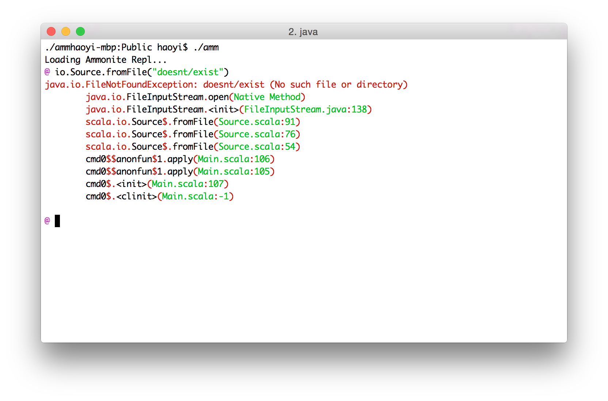
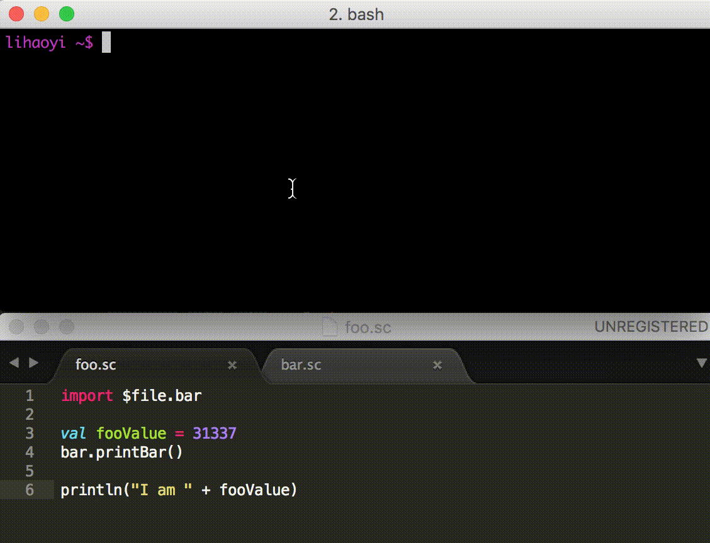
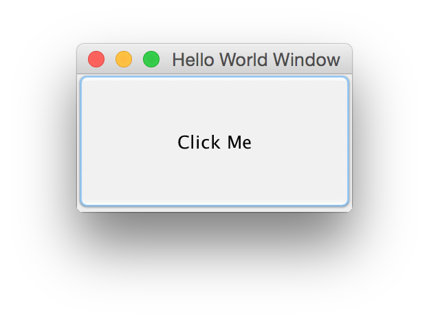

Ammonite lets you use the Scala language for scripting purposes: in the REPL, as scripts, as a library to use in existing projects, or as a standalone systems shell.
Ammonite-REPL |
A Modernized Scala REPL. With syntax highlighting, multi-line editing, the ability to load maven artifacts directly in the REPL, and many other quality-of-life improvements missing in the default Scala REPL. |
Scala Scripts |
Lightweight Programming in Scala. Create scripts that you can run easily from the command line, without the overhead of setting up a "project" or waiting for SBT's slow startup times. |
Ammonite-Ops |
A Rock-solid Filesystem Library for Scala. Deal with the filesystem easily from your existing Scala projects or applications, as easily as you would from a Bash or Python script. |
Ammonite-Shell |
A modern replacement for the Bash system shell. Provides a systems shell in the high-level Scala language, letting you seamlessly mix system operations with real code without the hassle or the frustration of trying to write complex code in Bash. |
Ammonite is a project by Li Haoyi. If you use Ammonite and enjoyed it, please chip in to support our development at:
Any amount will help us develop Ammonite into the best possible REPL and script runner for the Scala community!
The goal of Ammonite is to liberate your Scala code from heavyweight "projects", using the lightweight Ammonite runtime: if you want to run some Scala, open the Ammonite-REPL and run it, interactively! If you want to run it later, save it into some Scala Scripts and run those later.
For a video overview of the project and it's motivation, check out this talk:
If you are already working in Scala, you no longer have to drop down to Python or Bash for your scripting needs: you can use Scala Scripts for your scripting needs, and avoid the overhead of working in multiple languages.
Each of the above projects is usable standalone; click on the links to jump straight to their docs, or scroll around and browse through the navigation bar on the left. If you're wondering what you can do with Ammonite, there is an
Which contains a bunch of fun things that you can do, whether in the interactive Ammonite-REPL or in some Scala Scripts. You can also take a look at how people are using Ammonite in the wild:
To see what people are doing with it. And there are more talks available below:
The bulk of this page describes the latest stable release of Ammonite,
1.6.8. If you're willing to live on the edge,
we also publish Unstable Versions from any commits that get pushed
or pull-requests that land in the master branch:
The Ammonite-REPL is an improved Scala REPL, re-implemented from first principles. It is much more featureful than the default REPL and comes with a lot of ergonomic improvements and configurability that may be familiar to people coming from IDEs or other REPLs such as IPython or Zsh.
It can be combined with Ammonite-Ops to replace Bash as your systems shell, but also can be used alone as a superior version of the default Scala REPL, or as a debugging tool, or for many other fun and interesting things!
If you want to use Ammonite as a plain Scala shell, download the standalone Ammonite 1.6.8 executable for Scala 2.12 (also available for Older Scala Versions):
$ sudo sh -c '(echo "#!/usr/bin/env sh" && curl -L https://github.com/lihaoyi/Ammonite/releases/download/1.6.8/2.13-1.6.8) > /usr/local/bin/amm && chmod +x /usr/local/bin/amm' && amm
Or to try out the latest features in our Unstable Release 1.6.8:
$ sudo sh -c '(echo "#!/usr/bin/env sh" && curl -L https://github.com/lihaoyi/Ammonite/releases/download/1.6.8/2.13-1.6.8) > /usr/local/bin/amm && chmod +x /usr/local/bin/amm' && amm
Alternatively, on macOS you can install Ammonite via brew:
$ brew install ammonite-repl
This will give you access to the Ammonite-REPL:

With Pretty Printing, Syntax Highlighting for input and output, Artifact Loading in-REPL, and all the other nice Features!
If you want to use Ammonite as a filesystem shell, take a look at Ammonite-Shell. If you're not sure what to do with Ammonite, check out the Ammonite Cookbook for some fun ideas!
If you want some initialization code available to the REPL, you can add
it to your ~/.ammonite/predef.sc.
If you have any questions, come hang out on the mailing list or gitter channel and get help!
You can also try out Ammonite 1.6.8 in an existing
SBT project. To do so, add the following to your build.sbt
libraryDependencies += {
val version = scalaBinaryVersion.value match {
case "2.10" => "1.0.3"
case _ ⇒ "1.6.8"
}
"com.lihaoyi" % "ammonite" % version % "test" cross CrossVersion.full
}
sourceGenerators in Test += Def.task {
val file = (sourceManaged in Test).value / "amm.scala"
IO.write(file, """object amm extends App { ammonite.Main.main(args) }""")
Seq(file)
}.taskValue
// Optional, required for the `source` command to work
(fullClasspath in Test) ++= {
(updateClassifiers in Test).value
.configurations
.find(_.configuration == Test.name)
.get
.modules
.flatMap(_.artifacts)
.collect{case (a, f) if a.classifier == Some("sources") => f}
}
Or to try out the latest features in our Unstable Release 1.6.8:
libraryDependencies += "com.lihaoyi" % "ammonite" % "1.6.8" % "test" cross CrossVersion.full
After that, simply hit
sbt projectName/test:run
or if there are other main methods in the Test scope
sbt projectName/test:run-main amm
To activate the Ammonite REPL
You can also pass a string to the Main call containing any
commands or imports you want executed at the start of every run, along
with other configuration.
If you want Ammonite to be available in all projects, simply add the
above snippet to a new file ~/.sbt/0.13/global.sbt.
Note: Ammonite-REPL does not support Windows, even though Ammonite-Ops does. See #119 if you are interested in details or want to try your hand at making it work.
Features
Ammonite-REPL supports many more features than the default REPL, including:
Pretty-printed output
@ Seq.fill(10)(Seq.fill(3)("Foo"))
res0: Seq[Seq[String]] = List(
List("Foo", "Foo", "Foo"),
List("Foo", "Foo", "Foo"),
List("Foo", "Foo", "Foo"),
List("Foo", "Foo", "Foo"),
List("Foo", "Foo", "Foo"),
List("Foo", "Foo", "Foo"),
List("Foo", "Foo", "Foo"),
List("Foo", "Foo", "Foo"),
List("Foo", "Foo", "Foo"),
List("Foo", "Foo", "Foo")
)
@ case class Foo(i: Int, s0: String, s1: Seq[String])
defined class Foo
@ Foo(1, "", Nil)
res2: Foo = Foo(1, "", List())
@ Foo(
@ 1234567,
@ "I am a cow, hear me moo",
@ Seq("I weigh twice as much as you", "and I look good on the barbecue")
@ )
res3: Foo = Foo(
1234567,
"I am a cow, hear me moo",
List("I weigh twice as much as you", "and I look good on the barbecue")
)Ammonite-REPL uses PPrint to display its output by default. That means that everything is nicely formatted to fit within the width of the terminal, and is copy-paste-able!
By default, Ammonite truncates
the pretty-printed output to avoid flooding your terminal. If you want
to disable truncation, call show(...) on your expression to
pretty-print it's full output. You can also pass in an optional
height = ... parameter to control how much you want to show
before truncation.
Configurable Truncation
@ Seq.fill(20)(100)
res0: Seq[Int] = List(
100,
100,
100,
100,
100,
100,
100,
100,
100,
100,
100,
100,
100,
100,
...
@ show(Seq.fill(20)(100))
res1: ammonite.pprint.Show[Seq[Int]] = List(
100,
100,
100,
100,
100,
100,
100,
100,
100,
100,
100,
100,
100,
100,
100,
100,
100,
100,
100,
100
)
@ show(Seq.fill(20)(100), height = 3)
res2: ammonite.pprint.Show[Seq[Int]] = List(
100,
100,
...
@ repl.pprinter() = repl.pprinter().copy(defaultHeight = 5)
@ Seq.fill(20)(100)
res4: Seq[Int] = List(
100,
100,
100,
100,
...
Ammonite-REPL intelligently truncates your output when it's beyond a
certain size. You can request for the full output to be printed
on-demand, print a certain number of lines, or even change the implicit
pprintConfig so subsequent lines all use your new configuration.
Editing
Ammonite by default ships with a custom implementation of readline, which provides...
Syntax Highlighting

Ammonite syntax highlights both the code you're entering as well as any output being echoed in response. This should make it much easier to work with larger snippets of input.
All colors are configurable, and you can easily turn off colors entirely via the Configuration.
Stack traces are similarly highlighted, for easier reading:
Multi-line editing
You can use the Up and Down arrows to navigate between lines
within your snippet. Enter only executes the code when you're
on the last line of a multi-line snippet, meaning you can take your
time, space out your code nicely, and fix any mistakes anywhere in your
snippet. History is multi-line too, meaning re-running a multi-line
snippet is trivial, even with tweaks.
Long gone are the days where you're desperately trying to cram everything in a single line, or curse quietly when you notice a mistake in an earlier line you are no longer able to fix. No more painstakingly crafting a multi-line snippet, and then having to painstakingly fish it line by individual line out of the history so you can run it again!
Desktop key-bindings

You can use Alt-Left/Right to move forward/backwards by one word at a time or hold down Shift to select text to delete. These compose as you'd be used to: e.g. Shift-Up selects all the text between your current cursor and the same column one row up.
Tab and Shift-Tab now work to block-indent and -dedent
sections of code, as you'd expect in any desktop editor like Sublime
Text or IntelliJ. This further enhances the multi-line editing
experience, letting your nicely lay-out your more-complex REPL commands
the same way you'd format code in any other editor.
Console key-bindings
All the readline-style navigation hotkeys like Ctrl-W to delete a word or Esc-Left/Right to navigate one word left/right still work. If you're comfortable with consoles like Bash, Python, IPython or even the default Scala console, you should have no trouble as all the exact same hotkeys work in Ammonite
History Search

Apart from browsing your command-line history with UP, you can
also perform a history search by entering some search term and then
pressing UP. That will pull up the most recent history line with
that term in it, underlined. You can continue to press UP or
DOWN to cycle through the matches, or Backspace or
continue typing characters to refine your search to what you want.
You can press TAB, or any other command character (LEFT,
RIGHT, ...) to end the search and let you continue working with
the currently-displayed command. Pressing ENTER will end the
search and immediately submit the command to be run.
You can also kick off a history search using Ctrl-R, and use
Ctrl-R to cycle through the matches.
Block Input
To enter block input (many independent lines all at once) into the
Ammonite-REPL, simply wrap the multiple lines in curly braces
{ ... }, and Ammonite will wait until you close it before
evaluating the contents:
@ {
@ val x = 1
@ val y = 2
@ x + y
@ }
x: Int = 1
y: Int = 2
res0_2: Int = 3
As you can see, the contents of the { ... } block are
unwrapped and evaluated as top-level statements. You can use this to
e.g. declare mutually recursive functions or classes &
companion-objects without being forced to squeeze everything onto a
single line.
If you don't want this un-wrapping behavior, simply add another set of curlies and the block will be evaluated as a normal block, to a single expression:
@ {{
@ val x = 1
@ val y = 2
@ x + y
@ }}
res0: Int = 3Undo & Redo

The Ammonite command-line editor allows you to undo and re-do portions of your edits:
-
Ctrl -: Undo last change -
Alt/Esc -: Redo last change
Each block of typing, deletes, or navigation counts as one undo. This should make it much more convenient to recover from botched copy-pastes or bulk-deletions.
Magic Imports
Ammonite provides a set of magic imports that let you load additional
code into a REPL session: these are imports which start with a $,
and are *top-level* inside the REPL command or your
Scala Scripts.
import $file
This lets you load Scala Scripts into the REPL. For example given a small script defining one value we want
// MyScript.sc
val elite = 31337
We can load it into our REPL session using:
@ import $file.MyScript
@ MyScript.elite
res1: Int = 31337
If the script is in a sub-folder, simply use:
@ import $file.myfolder.MyScript
Or if the script is in an outer folder,
@ import $file.^.MyScript
Or if we want to import the contents of the script in one go:
@ import $file.MyScript, MyScript._
import $file.$
@ elite
res1: Int = 31337
While this is a trivial example, your MyScript.sc file can
contain anything you want, not just vals: function
defs, classes objects or
traits, or imports from other scripts. For more
documentation on how these scripts work, check out the
Scala Scripts section.
There are some subtleties when dealing with $file imports
that are worth remembering
- Imported Scripts are Re-used
- Cannot directly import from inside a Script
- Renamed-scripts and multiple-scripts
Note you can also perform file imports from your predef file, which are resolved relative to that file's path. This is useful if your predef is large and you want to break it up into multiple files.
Imported Scripts are Re-used
Note that script files imported multiple times are re-used; even if
the same script is imported multiple times, it will only be compiled
once, and its top-level definitions or statements will only be
evaluated once. If you want to run code over and over, def
a function in the script you are importing and you can call it
repeatedly.
If you want to re-load a script, you should use Ammonite's
Save/Load Session functionality to sess.save()
the session before importing the script, and sess.load()ing
to reset the script before re-importing it.
Cannot directly import from inside a Script
You cannot import things from "inside" that script in
one chain:@ import $file.MyScript._
Rather, you must always import the script-object first, and then import things from the script object after:
@ import $file.MyScript, MyScript._
Renamed-scripts and multiple-scripts
You can re-name scripts on-import if you find their names are colliding:
@ import $file.{MyScript => FooBarScript}, FooBarScript._
Or import multiple scripts at once
@ import $file.{MyScript, MyOtherScript}
These behave as you would expect imports to work. Note that when importing multiple scripts, you have to name them explicitly and cannot use wildcard `._` imports:
@ import $file._ // doesn't work
import $exec
This is similar to import $file, except that it dumps the
definitions and imports from the script into your REPL session. This is
useful if you are using a script to hold a set of common imports:
using import $file to import a script doesn't propagate
imports from that script into your REPL.
Alternatively, this is also useful if you want to split up your
~/.ammonite/predef.sc file into multiple scripts: e.g. if you
want to break up your predef.sc into two scripts
~/.ammonite/predef.sc and ~/.ammonite/helper.sc. While
you could use import $file to
import $file.helper within your predef.sc file, it
will only bring the helper object into scope within
predef.sc or within your REPL. import $exec.helper
will properly "dump" all the definitions from helper.sc into
your local scope, which is often what you want when dealing with
predef files.
See the docs for Scala Scripts for more on how script files work in general.
import $ivy
Lets you import Ivy dependencies from Maven Central, or anywhere else. For example, here is loading Scalaz and using it in the Ammonite-REPL:
@ import $ivy.`org.scalaz::scalaz-core:7.2.27`, scalaz._, Scalaz._
@ (Option(1) |@| Option(2))(_ + _)
res1: Option[Int] = Some(3)
Note that the different portions of the $ivy import are
in a org::library:version format; the :: is used to represent
Scala dependencies, similar to %% in SBT's dependency syntax.
If you want Java dependencies, you can load them using the
org:library:version format, e.g. here we load the
Google Guava Java library
@ import $ivy.`com.google.guava:guava:18.0`, com.google.common.collect._
@ val bimap = ImmutableBiMap.of(1, "one", 2, "two", 3, "three")
@ bimap.get(1)
res2: String = "one"
@ bimap.inverse.get("two")
res3: Int = 2
As well as the org:::library:version syntax for loading Scala
libraries cross-published against the full Scala version (e.g.
2.12.2 rather than just 2.12):
@ import org.scalamacros.paradise.Settings._
error: object scalamacros is not a member of package org
@ import $ivy.`org.scalamacros:::paradise:2.1.0`, org.scalamacros.paradise.Settings._
@ boolSetting("key").value
res1: Boolean = false
If you want to load a compiler plugin, you can do so using
import $plugin.$ivy:
@ // Compiler plugins imported without `.$plugin` are not loaded
@ import $ivy.`org.spire-math::kind-projector:0.6.3`
@ trait TC0[F[_]]
defined trait TC0
@ type TC0EitherStr = TC0[Either[String, ?]]
error: not found: type ?
@ // You need to use `import $plugin.$ivy`
@ import $plugin.$ivy.`org.spire-math::kind-projector:0.6.3`
@ trait TC[F[_]]
defined trait TC
@ type TCEitherStr = TC[Either[String, ?]]
defined type TCEitherStr
@ // Importing plugins doesn't affect the run-time classpath
@ import $plugin.$ivy.`com.lihaoyi::scalatags:0.7.0`
@ import scalatags.Text
error: not found: value scalatagsThis makes Ammonite ideal for trying out new libraries or tools. You can pull down projects like Scalaz or Shapeless and immediately start working with them in the REPL:
@ import $ivy.`com.chuusai::shapeless:2.3.3`, shapeless._
@ (1 :: "lol" :: List(1, 2, 3) :: HNil)
res1: Int :: String :: List[Int] :: HNil = 1 :: "lol" :: List(1, 2, 3) :: HNil
@ res1(1)
res2: String = "lol"
@ import shapeless.syntax.singleton._
@ 2.narrow
res4: 2 = 2Even non-trivial web frameworks like Finagle or Akka-HTTP can be simply pulled down and run in the REPL!
@ import $ivy.`com.twitter::finagle-httpx:6.26.0`
@ import com.twitter.finagle._, com.twitter.util._
@ var serverCount = 0
@ var clientResponse = 0
@ val service = new Service[httpx.Request, httpx.Response] {
@ def apply(req: httpx.Request): Future[httpx.Response] = {
@ serverCount += 1
@ Future.value(
@ httpx.Response(req.version, httpx.Status.Ok)
@ )
@ }
@ }
@ val server = Httpx.serve(":8080", service)
@ val client: Service[httpx.Request, httpx.Response] = Httpx.newService(":8080")
@ val request = httpx.Request(httpx.Method.Get, "/")
@ request.host = "www.scala-lang.org"
@ val response: Future[httpx.Response] = client(request)
@ response.onSuccess { resp: httpx.Response =>
@ clientResponse = resp.getStatusCode
@ }
@ Await.ready(response)
@ serverCount
res12: Int = 1
@ clientResponse
res13: Int = 200
@ server.close()Ammonite-REPL is configured with a set of default resolvers but you can add your own using Coursier's Repository APIs
@ import $ivy.`com.ambiata::mundane:1.2.1-20141230225616-50fc792`
error: Failed to resolve ivy dependencies
@ interp.repositories() ++= Seq(coursier.ivy.IvyRepository.fromPattern(
@ "https://ambiata-oss.s3-ap-southeast-2.amazonaws.com/" +:
@ coursier.ivy.Pattern.default
@ ))
@ import $ivy.`com.ambiata::mundane:1.2.1-20141230225616-50fc792`
@ import com.ambiata.mundane._Including repositories which need authentication:
import coursier.core.Authentication, coursier.MavenRepository
interp.repositories() ++= Seq(MavenRepository(
"https://nexus.corp.com/content/repositories/releases",
authentication = Some(Authentication("user", "pass"))
))
If you need more detailed control over what you are importing, e.g.
with attributes, classifiers or exclusions, you can fall back to
using the interp.load.ivy(deps: coursier.Dependency*)
function and configure each Dependency to your heart's content:
@ import os._
@ interp.load.module($printedScriptPath/"loadIvyAdvanced.sc")
@ serializerBuiltins
The Ammonite REPL contains a bunch of built-in imports and definitions by default. This includes:
-
repl: the object representing the Repl API, aliased asrepl. This allows you (e.g.repl.history) and you can use autocomplete ortypeOfon thereplobject to see what is available. - Utilities: tools such as time, grep or browse that are independent from the REPL, but are extremely useful to have in it.
All of these are imported by default into any Ammonite REPL, in order to
provide a rich and consistent REPL experience. If you want to disable
these imports and run the REPL with a clean namespace (with only the core
implicits needed for result pretty-printing/type-printing to work) pass
in defaultPredef = false to the REPL's Main API or
--no-default-predef to the REPL from the command-line.
Repl API
Ammonite contains a range of useful built-ins implemented as normal
functions on the repl and interp objects, e.g.
repl.history, repl.width, repl.frontEnd() to
change the front-end terminal implementation, etc.:
trait ReplAPI {
/**
* Read/writable prompt for the shell. Use this to change the
* REPL prompt at any time!
*/
val prompt: Ref[String]
/**
* The front-end REPL used to take user input. Modifiable!
*/
val frontEnd: Ref[FrontEnd]
/**
* Display help text if you don't know how to use the REPL
*/
def help: String
/**
* The last exception that was thrown in the REPL; `null` if nothing has
* yet been thrown. Useful if you want additional information from the
* thrown exception than the printed stack trace (e.g. many exceptions have
* additional metadata attached) or if you want to show the stack trace
* on an exception that doesn't normally print it (e.g. seeing the stack
* when a Ctrl-C interrupt happened) via `lastException.printStackTrace`.
*/
def lastException: Throwable
/**
* History of commands that have been entered into the shell, including
* previous sessions
*/
def fullHistory: History
/**
* History of commands that have been entered into the shell during the
* current session
*/
def history: History
/**
* Get the `Type` object of [[T]]. Useful for finding
* what its methods are and what you can do with it
*/
def typeOf[T: WeakTypeTag]: Type
/**
* Get the `Type` object representing the type of `t`. Useful
* for finding what its methods are and what you can do with it
*
*/
def typeOf[T: WeakTypeTag](t: => T): Type
/**
* Throw away the current scala.tools.nsc.Global and get a new one
*/
def newCompiler(): Unit
/**
* Access the compiler to do crazy things if you really want to!
*/
def compiler: scala.tools.nsc.Global
/**
* Access the presentation compiler to do even crazier things if you really want to!
*/
def interactiveCompiler: scala.tools.nsc.interactive.Global
/**
* Shows all imports added that bring values into scope for the commands a
* user runs; *includes* imports from the built-in predef and user predef files
*/
def fullImports: Imports
/**
* Shows the imports added to scope by the commands a user has entered so far;
* *excludes* imports from the built-in predef and user predef files
*/
def imports: Imports
/**
* If class wrapping is enabled, this lists the names of the previous commands
* that the current commands actually references (as told by the scalac).
*
* E.g. in a session like
* ```
* @ val n = 2
* n: Int = 2
*
* @ val p = 1
* p: Int = 1
*
* @ n + p
* res2: Int = 3
* ```
* this would have returned an empty list if called from the same line as `val n = 2`
* or `val p = 1`. This would have returned `Seq("cmd0", "cmd1")` if called
* from the same line as `n + p`, as both `cmd0`, that defines `n`, and `cmd1`, that
* defines `p`, are referenced from this line.
*/
def usedEarlierDefinitions: Seq[String]
/**
* Controls how things are pretty-printed in the REPL. Feel free
* to shadow this with your own definition to change how things look
*/
implicit def tprintColorsImplicit: pprint.TPrintColors
implicit def codeColorsImplicit: CodeColors
val pprinter: Ref[pprint.PPrinter]
implicit def pprinterImplicit = pprinter()
/**
* Current width of the terminal
*/
def width: Int
/**
* Current height of the terminal
*/
def height: Int
def show(t: Any): Unit
/**
* Lets you configure the pretty-printing of a value. By default, it simply
* disables truncation and prints the entire thing, but you can set other
* parameters as well if you want.
*/
def show(t: Any,
width: Integer = null,
height: Integer = null,
indent: Integer = null): Unit
/**
* Functions that can be used to manipulate the current REPL session:
* check-pointing progress, reverting to earlier checkpoints, or deleting
* checkpoints by name.
*
* Frames get pushed on a stack; by default, a saved frame is
* accessible simply by calling `load`. If you provide a name
* when `save`ing a checkpoint, it can later be `load`ed directly
* by providing the same name to `load`
*
* Un-named checkpoints are garbage collected, together with their
* classloader and associated data, when they are no longer accessible
* due to `restore`. Named checkpoints are kept forever; call `delete`
* on them if you really want them to go away.
*/
def sess: Session
def load: ReplLoad
def clipboard: Clipboard
}
trait ReplLoad{
/**
* Loads a command into the REPL and
* evaluates them one after another
*/
def apply(line: String): Unit
/**
* Loads and executes the scriptfile on the specified path.
* Compilation units separated by `@\n` are evaluated sequentially.
* If an error happens it prints an error message to the console.
*/
def exec(path: os.Path): Unit
}
trait Session{
/**
* The current stack of frames
*/
def frames: List[Frame]
/**
* Checkpoints your current work, placing all future work into its own
* frames. If a name is provided, it can be used to quickly recover
* that checkpoint later.
*/
def save(name: String = ""): Unit
/**
* Discards the last frames, effectively reverting your session to
* the last `save`-ed checkpoint. If a name is provided, it instead reverts
* your session to the checkpoint with that name.
*/
def load(name: String = ""): SessionChanged
/**
* Resets you to the last save point. If you pass in `num`, it resets
* you to that many savepoints since the last one.
*/
def pop(num: Int = 1): SessionChanged
/**
* Deletes a named checkpoint, allowing it to be garbage collected if it
* is no longer accessible.
*/
def delete(name: String): Unit
}
trait Clipboard{
/**
* Reads contents from the system clipboard.
* @return System clipboard contents if they are readable as `String`,
* empty string otherwise.
*/
def read: String
/**
* Sets the contents of the system clipboard.
*
* @param data New contents for the clipboard.
*/
def write(data: Internals.Writable): Unit
}
All of these are available as part of the repl object
which is imported in scope by default. Additional
functionality available under the interp object, which is also
available in scripts:
trait InterpAPI {
/**
* When running a script in `--watch` mode, re-run the main script if this
* file changes. By default, this happens for all script files, but you can
* call this to watch arbitrary files your script may depend on
*/
def watch(p: os.Path): Unit
/**
* The colors that will be used to render the Ammonite REPL in the terminal,
* or for rendering miscellaneous info messages when running scripts.
*/
val colors: Ref[Colors]
/**
* Tools related to loading external scripts and code into the REPL
*/
def load: InterpLoad
/**
* resolvers to use when loading jars
*/
def repositories: Ref[List[coursier.Repository]]
/**
* Functions that will be chained and called on the coursier
* Fetch object right before they are run
*/
val resolutionHooks: mutable.Buffer[
coursier.Fetch[Task] => coursier.Fetch[Task]
]
/**
* Exit the Ammonite REPL. You can also use Ctrl-D to exit
*/
def exit = throw AmmoniteExit(())
/**
* Exit the Ammonite REPL. You can also use Ctrl-D to exit
*/
def exit(value: Any) = throw AmmoniteExit(value)
/**
* Functions that will be chained and called on the
* exitValue before the repl exits
*/
val beforeExitHooks: mutable.Buffer[Any => Any]
/**
* Configures the current compiler, or if the compiler hasn't been initialized
* yet, registers the configuration callback and applies it to the compiler
* when it ends up being initialized later
*/
def configureCompiler(c: scala.tools.nsc.Global => Unit): Unit
/**
* Pre-configures the next compiler. Useful for tuning options that are
* used during parsing such as -Yrangepos
*/
def preConfigureCompiler(c: scala.tools.nsc.Settings => Unit): Unit
}
trait LoadJar {
/**
* Load a `.jar` file or directory into your JVM classpath
*/
def cp(jar: os.Path): Unit
/**
* Load a `.jar` from a URL into your JVM classpath
*/
def cp(jar: java.net.URL): Unit
/**
* Load one or more `.jar` files or directories into your JVM classpath
*/
def cp(jars: Seq[os.Path]): Unit
/**
* Load a library from its maven/ivy coordinates
*/
def ivy(coordinates: coursier.Dependency*): Unit
}
trait InterpLoad extends LoadJar{
def module(path: os.Path): Unit
def plugin: LoadJar
}Utilities
Apart from the core Builtins of the REPL, the Ammonite REPL also includes many helpers that are not strictly necessarily but are very useful in almost all REPL sessions. Here are a few of them
The REPL also imports the pipe-operators
from Ammonite-Ops by default to make it easy for you to use tools like
grep interactively, and imports all the Builtins
from the repl.
These tools are useful but not strictly necessary;
source

Ammonite provides the src built-in, which lets you easily
peek at the source code of various functions or classes. You can
use this to read their doc-comments or inspect their implementation,
to help you figure out how to use them.
src accepts two kinda of inputs:
-
A method call
foo.bar(...), in which case it will try to bring you to concrete implementation of that methodbar. You can also leave the method arguments empty using `_`. -
An arbitrary expression
foo, in which case it will try to bring you to the implementation offoo's runtime class
src works on both Scala and Java APIs, both the standard
library as well as third-party dependencies. src opens source
files using the less pager by default; if you wish to change
this, you can pass in a replacement command as a second argument
e.g. src(..., "vim") or e.g. src(..., Seq("vim", "--flag"))
When used within a SBT project src requires the following
SBT setting in order to make the source code of third-party
dependencies available:
// Optional, required for the `source` command to work
(fullClasspath in Test) ++= {
(updateClassifiers in Test).value
.configurations
.find(_.configuration == Test.name)
.get
.modules
.flatMap(_.artifacts)
.collect{case (a, f) if a.classifier == Some("sources") => f}
}
Ammonite also automatically downloads the source jars of any
libraries you import via import $ivy, and makes them
browsable via src.
src is experimental: it may not always be able to find the
source code of a particular method or class, and the source
location it brings you to may be a few lines away from the source
you really want. Furthermore, src also does not find sources
that are within your own local scripts or SBT project: you likely
already have access to those via your text editor anyway.
Nevertheless, it should work in the bulk of cases, so try it out and come by the Gitter Channel if you face any issues!
time
bash$ time ls -a
.
..
amm
appveyor.yml
build.sbt
build.sc
ci
deploy_key
fail.txt
.git
.gitignore
integration
internals-docs
LICENSE
ops
out
project
readme
readme.md
shell
sshd
terminal
.travis.yml
real 0m0.002s
user 0m0.000s
sys 0m0.000sCompiling /home/travis/build/lihaoyi/Ammonite/shell/src/main/resources/ammonite/shell/example-predef-bare.sc Compiling /home/travis/build/lihaoyi/Ammonite/shell/src/main/resources/ammonite/shell/example-predef-bare.sc #2 Welcome to the Ammonite Repl 1.6.8 (Scala 2.13.0 Java 1.8.0_151) If you like Ammonite, please support our development at www.patreon.com/lihaoyi @ time{ls!} res0: (LsSeq, concurrent.duration.FiniteDuration) = ( ".git" "build.sbt" "internals-docs" 'shell ".gitignore" "build.sc" 'ops 'sshd ".travis.yml" 'ci 'out 'target 'LICENSE 'deploy_key 'project 'terminal 'amm "fail.txt" 'readme "appveyor.yml" 'integration "readme.md" , 14409641 nanoseconds )
Just as bash provides a time command that you can use to see
how long a command took to run, Ammonite-Shell provides a
time function which serves the same purpose.
While the bash version spits out the time in an ad-hoc table format,
stuck together with the output of the command, Ammonite-Shell's
time instead returns a tuple containing the expression
that was evaluated, and the time taken to evaluate it.
grep
bash$ ls -a . | grep re
.gitignore
readme
readme.md@ ls! wd || grep! "re" res0: Seq[GrepResult] = List( root/'home/'travis/'build/'lihaoyi/'Ammonite/".gitignore", root/'home/'travis/'build/'lihaoyi/'Ammonite/'readme, root/'home/'travis/'build/'lihaoyi/'Ammonite/"readme.md" )
bash$ ls -a . | grep re
.gitignore
readme
readme.md@ ls! wd |? grep! "re" res0: Seq[Path] = List( root/'home/'travis/'build/'lihaoyi/'Ammonite/".gitignore", root/'home/'travis/'build/'lihaoyi/'Ammonite/'readme, root/'home/'travis/'build/'lihaoyi/'Ammonite/"readme.md" )
Ammonite provides its own grep command, which lets you
easily perform ad-hoc searches within a list.
As shown above, Ammonite's grep can be used via
|| (flatMap) or |?
(filter). In the case of ||, it displays the
matches found, highlighted, with some additional context before and
after the match. When used with |?, it simply returns the
relevant items. In general, || is useful for manual
exploration, while |? is useful in scripts where you want
to deal with the list of matched results later.
By default, Ammonite's grep matches a string as a literal.
If you want to match via a regex, append a .r to the
string literal to turn it into a regex:
bash$ ls -a . | grep -G "re[a-z]\+"
readme
readme.md@ ls! wd || grep! "re[a-z]+".r res0: Seq[GrepResult] = List( root/'home/'travis/'build/'lihaoyi/'Ammonite/'readme, root/'home/'travis/'build/'lihaoyi/'Ammonite/"readme.md" )
Ammonite's grep isn't limited to "filesystem"-y things;
any collection of objects can be piped through grep!
For example, here's grep being used to quickly search
through the JVM system properties:
@ // I'm only interested in OS-related properties, show them to me! @ sys.props || grep! "os|OS".r cmd0.sc:1: value || is not a member of scala.sys.SystemProperties val res0 = sys.props || grep! "os|OS".r ^ Compilation Failed
You can even use Ammonite's grep to dig through the
methods of an object, even large messy objects with far-too-many
methods to go over by hand hunting for what you want:
@ typeOf(repl.compiler).members.size // Too many methods to dig through! res0: Int = 1586 @ // I forgot what I want but I think it has Raw in the name @ typeOf(repl.compiler).members || grep! "Raw" cmd1.sc:1: value || is not a member of reflect.runtime.universe.MemberScope val res1 = typeOf(repl.compiler).members || grep! "Raw" ^ Compilation Failed
In general, Ammonite's grep serves the same purpose of
grep in the Bash shell: a quick and dirty way to explore large
amounts of semi-structured data. You probably don't want to build
your enterprise business logic on top of grep's string
matching. While you're working, though, grep can be a
quick way to find items of interest in collections of things
(anything!) too large to sift through by hand, when you're not yet
sure exactly what you want.
browse

browse is a utility that lets you open up far-too-large
data structures in the less pager, letting you page through
large quantities of text, navigating around it and searching through
it, without needing to spam your terminal output with its contents
and losing your earlier work to the output-spam. Simple call
browse on whatever value you want, e.g. this 50 thousand
line ls.rec result show above.
If you're dealing with large blobs of data that you want to dig
through manually, you might normally format it nicely, write it to
a file, and open it in vim or less or an editor such
as Sublime Text. browse makes that process quick and
convenient.
You can customize the browse call like you would a
show call or pprint.pprintln call, e.g. setting
an optional width, colors or indent.
You can also choose a viewer program in case you don't
want to use less: e.g. here's a command that would open it up
in vim:
haoyi-Ammonite@ browse(res0, viewer="vim", colors = pprint.Colors.BlackWhite)
Apart from using viewer="vim", we also set the
colors to black and white because Vim by default doesn't
display ANSI colors nicely. You can also pass in a Seq of
strings to viewer if you want to pass additional flags to
your editor, and of course use any other editor you would like such
as "emacs" or "nano" or "subl"
desugar

desugar allows you to easily see what the compiler is
doing with your code before it gets run. For example, in the above
calls to desugar, you can see:
-
List(...)being converted toList.apply(...) -
true -> falsebeing converted toPredef.ArrayAssoc(true).$minus$greater(false) -
default.write$default,default.SeqishW, etc. being injected as implicits -
forcomprehensions withiffilters being converted into the relevantwithFilterandmapcalls
In general, if you are having trouble understanding the combination
of implicit parameters, implicit conversions, macros, and other odd
Scala features, desugar could you see what is left after
all the magic happens.
desugar only works in Scala 2.11.x and above, not in 2.10.x
Save/Load Session
Ammonite allows you to save your work half way through, letting you discard and future changes and returning to the state of the world you saved.
Defined some memory-hogging variable you didn't need? Loaded the wrong version of some third-party library? Reluctant to reload the REPL because reloading is slow? Fear not! With Ammonite, you can save your important work, do whatever you want later, and simply discard all the jars you loaded, variables you defined
@ val veryImportant = 1
veryImportant: Int = 1
@ repl.sess.save()
@ val oopsDontWantThis = 2
oopsDontWantThis: Int = 2
@ // Let's try this new cool new library
@ import $ivy.`com.lihaoyi::scalatags:0.7.0`
@ veryImportant
res4: Int = 1
@ oopsDontWantThis
res5: Int = 2
@ import scalatags.Text.all._
@ div("Hello").render
res7: String = "<div>Hello</div>"
@ // Oh no, maybe we don't want scalatags!
@ repl.sess.load()
@ veryImportant
res9: Int = 1
@ oopsDontWantThis
error: not found: value oopsDontWantThis
@ import scalatags.Text.all._
error: not found: value scalatags
""")
Apart from plain saves and loads, which simply
discard everything after the most recent save, you can also provide a
name to these functions. That lets you stop working on a branch, go do
something else for a while, and be able to come back later to continue
where you left off:
@ val (x, y) = (1, 2)
x: Int = 1
y: Int = 2
@ repl.sess.save("xy initialized")
@ val z = x + y
z: Int = 3
@ repl.sess.save("first z")
@ repl.sess.load("xy initialized")
@ val z = x - y
z: Int = -1
@ repl.sess.save("second z")
@ z
res7: Int = -1
@ repl.sess.load("first z")
@ z
res9: Int = 3
@ repl.sess.load("second z")
@ z
res11: Int = -1
""")
Lastly, you have the repl.sess.pop() function. Without any
arguments, it behaves the same as repl.sess.load(), reseting you
to your last savepoint. However, you can pass in a number of session
frames which you'd like to pop, allow you to reset your session to even
earlier save points. repl.sess.pop(2) would put you two
save-points ago, repl.sess.pop(3) would put you three save-points
ago, letting you reach earlier save-points even if you did not give
them names. Passing in a large number like repl.sess.pop(999)
would reset your session all the way until the start.
Ammonite's save and load functionality is
implemented via Java class-loaders.
Superior Autocomplete
The original Scala REPL provides no autocomplete except for the most
basic scenarios of value.<complete>. In the Ammonite-REPL,
you get the same autocomplete-anywhere support that you get in a modern
IDE.
@ Seq(1, 2, 3).map(x => x.)
getClass ## asInstanceOf isInstanceOf
toString hashCode equals !=
== % / *
- + ^ &
| >= > <=
< >> >>> <<
unary_- unary_+ unary_~ toDouble
toFloat toLong toInt toChar
toShort toByte compareTo doubleValue
...
@ Futu
scala.collection.parallel.FutureThreadPoolTasks
scala.collection.parallel.FutureTasks
scala.concurrent.impl.Future$PromiseCompletingRunnable
scala.concurrent.impl.Future
scala.concurrent.Future
scala.concurrent.FutureTaskRunner
scala.concurrent.Future$InternalCallbackExecutor
scala.concurrent.Future$class
java.util.concurrent.Future
java.util.concurrent.FutureTask$WaitNode
java.util.concurrent.FutureTask
com.sun.corba.se.impl.orbutil.closure.Future
Ammonite also allows you to autocomplete third party dependencies pulled in via import $ivy, to make it easy for you to navigate the public package repositories and find the name and version of a dependency that you want:

None of these examples work in the standard Scala REPL.
Interrupting run-away execution with Ctrl-C
@ while(true) ()
... hangs ...
^Ctrl-C
Interrupted!
@
The traditional Scala REPL doesn't handle runaway code, and gives you no option but to kill the process, losing all your work. Ammonite-REPL lets you interrupt the thread, stop the runaway-command and keep going.
Compiler-crash Robustness
@ val x = 1
x: Int = 1
@ /* trigger compiler crash */ trait Bar { super[Object].hashCode }
error: java.lang.AssertionError: assertion failed
@ 1 + x
res1: Int = 2
The default Scala REPL throws away all your work if the compiler
crashes. This doesn't make any sense, because all the compiler is is
a dumb String => Array[Byte] pipe. In the Ammonite, we
simply swap out the broken compiler for a new one and let you continue
your work.
Other Fixes
Apart from the above features, the Ammonite REPL fixes a large number of bugs in the default Scala REPL, including but not limited to:
Configuration
Ammonite is configured via Scala code, that can live in the
~/.ammonite/predef.sc file, passed in through SBT's
initialCommands, or passed to the command-line executable as
--predef='...'.
Anything that you put in predef.sc will be executed when you
load the Ammonite REPL. This is a handy place to put common imports,
setup code, or even call import $ivy to
load third-party jars. The compilation
of the predef is cached, so after the first run it should not noticeably
slow down the initialization of your REPL.
Some examples of things you can configure:
@ // Set the shell prompt to be something else
@ repl.prompt() = ">"
@ // Change the terminal front end; the default is
@ // Ammonite on Linux/OSX and JLineWindows on Windows
@ repl.frontEnd() = ammonite.repl.FrontEnd.JLineUnix
@ repl.frontEnd() = ammonite.repl.FrontEnd.JLineWindows
@ repl.frontEnd() = ammonite.repl.AmmoniteFrontEnd()
@ // Changing the colors used by Ammonite; all at once:
@ interp.colors() = ammonite.util.Colors.BlackWhite
@ interp.colors() = ammonite.util.Colors.Default
@ // or one at a time:
@ interp.colors().prompt() = fansi.Color.Red
@ interp.colors().ident() = fansi.Color.Green
@ interp.colors().`type`() = fansi.Color.Yellow
@ interp.colors().literal() = fansi.Color.Magenta
@ interp.colors().prefix() = fansi.Color.Cyan
@ interp.colors().comment() = fansi.Color.Red
@ interp.colors().keyword() = fansi.Bold.On
@ interp.colors().selected() = fansi.Underlined.On
@ interp.colors().error() = fansi.Color.YellowRefs
By default, all the values you're seeing here with the () after
them are Refs, defined as
trait StableRef[T]{
/**
* Get the current value of the this [[StableRef]] at this instant in time
*/
def apply(): T
/**
* Set the value of this [[StableRef]] to always be the value `t`
*/
def update(t: T): Unit
}
trait Ref[T] extends StableRef[T]{
/**
* Return a function that can be used to get the value of this [[Ref]]
* at any point in time
*/
def live(): () => T
/**
* Set the value of this [[Ref]] to always be the value of the by-name
* argument `t`, at any point in time
*/
def bind(t: => T): Unit
}
As you can see from the signature, you can basically interact with the
Refs in two ways: either getting or setting their values as
values, or binding their values to expressions that will be evaluated
every time the Ref's value is needed.
As an example of the latter, you can use bind to set your
prompt to always include your current working directory
repl.prompt.bind(wd.toString + "@ ")
As is common practice in other shells. Further modifications to make it include e.g. your current branch in Git (which you can call through Ammonite's subprocess API or the current timestamp/user are similarly possible.
Compiler Flags
Apart from configuration of the rest of the shell through
Refs, configuration of the Scala compiler takes place
separately through the compiler's own configuration mechanism. You have
access to the compiler as compiler, and can modify its settings
as you see fit. Here's an example of this in action:
@ // Disabling default Scala imports
@ List(1, 2, 3) + "lol"
res0: String = "List(1, 2, 3)lol"
@ interp.configureCompiler(_.settings.noimports.value = true)
@ List(1, 2, 3) + "lol" // predef imports disappear
error: not found: value List
@ interp.configureCompiler(_.settings.noimports.value = false)
@ List(1, 2, 3) + "lol"
res3: String = "List(1, 2, 3)lol"
@ // Disabling Scala language-import enforcement
@ object X extends Dynamic
error: extension of type scala.Dynamic needs to be enabled
@ interp.configureCompiler(_.settings.language.tryToSet(List("dynamics")))
@ object X extends Dynamic
defined object X
@ 1 + 1 // other things still work
@ // Enabling warnings (which are disabled by default)
@ List(1) match { case _: List[Double] => 2 }
res7: Int = 2
@ interp.configureCompiler(_.settings.nowarnings.value = false)
@ List(1) match { case _: List[Double] => 2 }
warning: $fruitlessTypeTestWarningMessageBlahBlahBlah
@ // Note you can refer to `repl.compiler` when interactive in the REPL
@ // But you should use `interp.configureCompiler` in your scripts/predef
@ // because `repl.compiler` may be `null` if the script is cached.
@ repl.compiler.settings.nowarnings.value
res10: Boolean = false
If you want these changes to always be present, place them in your
~/.ammonite/predef.sc.
JVM Flags
Ammonite also supports the JAVA_OPTS environment variable for
passing arguments to the JVM that it runs inside, e.g. you can pass in
a custom memory limit via
bash$ JAVA_OPTS="-Xmx1024m" amm
To start the REPL while letting it use only up to 1024 megabytes of memory
Embedding
The Ammonite REPL is just a plain-old-Scala-object, just like any other Scala object, and can be easily used within an existing Scala program. This is useful for things like interactive Debugging or hosting a Remote REPL to interact with a long-lived Scala process, or Instantiating Ammonite inside an existing program to serve as a powerful interactive console.
Instantiating Ammonite
To use Ammonite inside an existing Scala program, you need to first add it to your dependencies:
libraryDependencies += "com.lihaoyi" % "ammonite" % "1.6.8" cross CrossVersion.full
Then instantiate it with this code anywhere within your program:
package ammonite.integration
object TestMain {
def main(args: Array[String]): Unit = {
val hello = "Hello"
// Break into debug REPL with
ammonite.Main(
predefCode = "println(\"Starting Debugging!\")"
).run(
"hello" -> hello,
"fooValue" -> foo()
)
}
def foo() = 1
}
You can configure the instantiated REPL by passing in arguments to the
Main() call, e.g. to redirect the input/output streams or to
run a predef to configure it further.
Debugging
Ammonite can be used as a tool to debug any other Scala program, by conveniently opening a REPL at any point within your program with which you can interact with live program data, similar to pdb/ipdb in Python. To do so, first add Ammonite to your classpath, e.g. through this SBT snippet:
libraryDependencies += "com.lihaoyi" % "ammonite" % "1.6.8" cross CrossVersion.full
Note that unlike the snippet given above, we
leave out the % "test" because we may want ammonite to be
available within the "main" project, and not just in the unit tests.
Then, anywhere within your program, you can place a breakpoint via:
package ammonite.integration
object TestMain {
def main(args: Array[String]): Unit = {
val hello = "Hello"
// Break into debug REPL with
ammonite.Main(
predefCode = "println(\"Starting Debugging!\")"
).run(
"hello" -> hello,
"fooValue" -> foo()
)
}
def foo() = 1
}
And when your program reaches that point, it will pause and open up an
Ammonite REPL with the values you provided it bound to the names you
gave it. From there, you can interact with those values as normal Scala
values within the REPL. Use Ctrl-D or exit to exit the
REPL and continue normal program execution. Note that the names given
must be plain Scala identifiers.
Here's an example of it being used to debug changes to the WootJS webserver:
 In this case, we added the
In this case, we added the debug statement within the
websocket frame handler, so we can inspect the values that are taking
part in the client-server data exchange. You can also put the
run statement inside a conditional, to make it break only
when certain interesting situations (e.g. bugs) occur.
As you can see, you can bind the values you're interested in to names inside the debug REPL, and once in the REPL are free to explore them interactively.
The debug() call returns : Any; by default, this
is (): Unit, but you can also return custom values by
passing in an argument to exit(...) when you exit the REPL.
This value will then be returned from debug(), and can be
used in the rest of your Scala application.
Remote REPL
Ammonite can also be used to remotely connect to your running
application and interact with it in real-time, similar to Erlang's
erl -remsh command.
This is useful if e.g. you have multiple Scala/Java processes running but aren't sure when/if you'd want to inspect them for debugging, and if so which ones. With Ammonite, you can leave a ssh server running in each process. You can then and connect-to/disconnect-from each one at your leisure, working with the in-process Scala/Java objects and methods and classes interactively, without having to change code and restart the process to add breakpoints or instrumentation.
To do this, add ammonite-sshd to your classpath, for example with SBT:
libraryDependencies += "com.lihaoyi" % "ammonite-sshd" % "1.6.8" cross CrossVersion.full
Now add repl server to your application:
import ammonite.sshd._
val replServer = new SshdRepl(
SshServerConfig(
address = "localhost", // or "0.0.0.0" for public-facing shells
port = 22222, // Any available port
passwordAuthenticator = Some(pwdAuth) // or publicKeyAuthenticator
)
)
replServer.start()
And start your application. You will be able to connect to it using ssh
like this: ssh repl@localhost -p22222 and interact with your
running app. Invoke stop() method whenever you want to
shutdown ammonite sshd server. Here for example sshd repl server is
embedded in the Akka HTTP microservice example:

Here we can interact with code live, inspecting values or calling methods on the running system. We can try different things, see which works and which not, and then put our final bits in application code. In this example app is located on local machine, but you are free to connect to any remote node running your code.
Security notes: It is probably unsafe to run this server publicly
(on host "0.0.0.0") in a production, public-facing
application. If you insist on doing so, you probably want key-based
authentication, available by supplying publicKeyAuthenticator
in the SshServerConfig.
Despite this, it is perfectly possible to run these on production
infrastructure: simply leave the host set to
"localhost", and rely on the machine's own SSH access to
keep out unwanted users: you would first ssh onto the machine
itself, and then ssh into the Ammonite REPL running on
localhost.
Typically most organizations already have bastions, firewalls, and
other necessary infrastructure to allow trusted parties SSH access to
the relevant machines. Running on localhost lets you leverage
that and gain all the same security properties without having to
re-implement them in Scala.
Scala scripts are lightweight files containing Scala code that can be directly run from the command line. Unlike normal Scala projects, Scala scripts let you save and run code without setting up a "build-file" or "project". Scala Scripts are useful for writing small pieces of code, and are much quicker to write and deploy than a full-fledged SBT project.

Creating an Ammonite Script is just a matter of creating a
MyScript.sc with some Scala code in it, and running it
from your terminal. Deploying the script is
a matter of copying the script file to where-ever you want to run it, and
running it. No project/ folder, no worrying about .jar files
or uber-jars. No worrying about compiling your code: scripts are
automatically compiled the first time they are run, and subsequently start
quickly with minimal overhead. Writing and running Scala code
doesn't get much easier than that!
As an example, Ammonite's own
Continuous Integration Scripts
are written as .sc Scala Scripts, as are Haoyi's blog and resume. These are all examples of using
Scala Scripts to do some simple (or not so simple!) tasks in just a few
files, without the hassle of setting up a heavyweight SBT project.
To begin with, download the Ammonite 1.6.8 script-runner for Scala 2.12 (also available for Older Scala Versions):
$ sudo sh -c '(echo "#!/usr/bin/env sh" && curl -L https://github.com/lihaoyi/Ammonite/releases/download/1.6.8/2.13-1.6.8) > /usr/local/bin/amm && chmod +x /usr/local/bin/amm' && amm
Or to try out the latest features in our Unstable Release 1.6.8:
$ sudo sh -c '(echo "#!/usr/bin/env sh" && curl -L https://github.com/lihaoyi/Ammonite/releases/download/1.6.8/2.13-1.6.8) > /usr/local/bin/amm && chmod +x /usr/local/bin/amm' && amm
And read on to learn about how Scala scripts work.
Script Files
Ammonite defines a format that allows you to load external scripts into the REPL; this can be used to save common functionality so it can be used at a later date. In the simplest case, a script file is simply a sequence of Scala statements, e.g.
// MyScript.sc
// print banner
println("Hello World!!")
// common imports
import sys.process._
import collection.mutable
// common initialization code
val x = 123
println("x is " + 123)
...
You can write any Scala code you want in an Ammonite script, including
top-level statements and definitions (e.g. the println and
val x = 123 above) that are not valid in "normal" Scala
projects. You do not need to wrap these sorts of top-level statements
or expressions in boilerplate object Foo{...} wrappers:
this is all done automatically for you by Ammonite.
After that, it's a matter of running the script From the REPL or From Bash, e.g.
bash$ amm MyScript.scHello World!!
x is 123
...
Script Imports
No code stands alone; scripts depend on other scripts. Often they depend on third party libraries, as there's so much code out there already written it doesn't make sense to re-invent everything yourself.
Ammonite Scripts allow you to import Other Scripts, just like any Bash or Python scripts do. Furthermore, they let you cleanly depend on third party libraries: since Ammonite runs on the JVM, this means Ivy Dependencies. Ammonite will ensure that the relevant dependencies are always downloaded and used, and you never need to worry about remembering to "install" things before running your scripts!
Other Scripts
Like other scripting languages, Ammonite Scripts allow you to break your
script into multiple files, and import them from each other in order to
use what is in each file. Unlike "Normal" Scala projects, there is no
need to set up a src/main/scala folder, and create a build file,
and all these other things: simply split your script into two files, and
import one from the other using import $file:
// Basic.sc
val basicValue = 31337// FileImport.sc
import $file.Basic
val fileImportVal = Basic.basicValue + 1
Here, we are defining a simple val in Basic.sc, and
then importing it from FileImport.sc. And of course, we can
use what we defined in FileImport.sc and import it in another
file
// IndirectFileImport.sc
import $file.FileImport
val indirectFileImportVal = FileImport.fileImportVal + 1
And so on, importing files as many or as deep as you want. You can
use ^ segments at the start of your import $file
to import things from outside the current script's enclosing folder, e.g.
import $file.^.^.foo will import the script file
../../foo.sc and make it available for you to use.
$file imports inside Scala Scripts behave the same as
$file imports within the Ammonite-REPL, and have the same characteristics:
- Imported Scripts are Re-used
- Cannot directly import from inside a Script
- Renamed-scripts and multiple-scripts
Ivy Dependencies
You can easily make use of external Ivy artifacts right in your scripts, without needing to set up a separate build file. Simply use a import $ivy, just as you would in the Ammonite-REPL, and it will be available in the script for you to use, e.g. here we make use of the Scalatags library:
import $ivy.`com.lihaoyi::scalatags:0.7.0`, scalatags.Text.all._
val rendered = div("Moo").render
If you need more detailed control over what you are importing, e.g.
with attributes, classifiers or exclusions, you can fall back to
using the interp.load.ivy(deps: coursier.Dependency*)
function.
@ import os._
@ interp.load.module($printedScriptPath/"loadIvyAdvanced.sc")
@ serializer
Note that to use this function, your script needs to be a
multi-stage script as listed below, and the interp.load.ivy
call needs to be in an earlier block
Multi-stage Scripts
By default, everything in a script is compiled and executed as a single block. While you can use Magic Imports to load other scripts or Ivy artifacts before your script runs, those can only load "hardcoded" scripts or artifacts, and cannot e.g. load different scripts depending on some runtime variables.
If you want to load different scripts or ivy artifacts depending on runtime values, you can use the runtime-equivalent of magic imports:
-
import $cpbecomesinterp.load.cp -
import $filebecomesinterp.load.module -
import $ivybecomesinterp.load.ivy
These are plain-old-Scala-functions that let you pass in a
Path to a script to load, or load different Ivy artifacts
depending on runtime values. Additionally, there is an overloaded
version of interp.load.cp which takes a Seq[Path]
of classpath entries. This variant is much more efficient for adding
multiple classpath entries at once.
Since these functions get run *after* the current compilation block is
compiled, you need to split your script into two compilation blocks,
and can only use the results of the loaded code in
subsequent blocks:
// print banner
println("Welcome to the XYZ custom REPL!!")
val scalazVersion = "7.2.7"
interp.load.ivy("org.scalaz" %% "scalaz-core" % scalazVersion)
// This @ is necessary for Ammonite to process the `interp.load.ivy`
// before continuing
@
// common imports
import scalaz._
import Scalaz._
// use Scalaz!
...
In general, this should not be necessary very often: usually you should
be able to load what you want using Magic Imports.
Nevertheless, sometimes you may find yourself needing to get "under the
hood" and use these loading functions directly. When that
happens, using Multi-stage Scripts is the way to go.
Script Arguments
Often when calling a script from the external command-line (e.g.
Bash), you need to pass arguments to configure its behavior. With
Ammonite, this is done by defining a @main method, e.g.
// Args.sc
val x = 1
@main
def main(i: Int, s: String, path: os.Path = os.pwd) = {
s"Hello! ${s * i} ${path.last}."
}When the script is run from the command line:
$ amm Args.sc 3 Moo
"Hello! MooMooMoo Ammonite."
The top-level definitions execute first (e.g. setting x),
and then the @main method is called with the arguments you
passed in. Note that the return-value of the script is pretty-printed
by default, which quotes strings and may nicely format/indent lists or
other data-structures. If you want to avoid this default pretty-printing
behavior, annotate your @main method as returning
: Unit and add your own printlns:
// Args.sc
val x = 1
@main
def main(i: Int, s: String, path: os.Path = os.pwd): Unit = {
println(s"Hello! ${s * i} ${path.last}.")
}$ amm Args2.sc 3 Moo
Hello! MooMooMoo Ammonite
You can also pass in named arguments using -- to demarcate
them:
$ amm Args.sc --i 3 --s Moo
"Hello! MooMooMoo Ammonite."
Default arguments behave as you would expect (i.e. they allow you to
omit it when calling) and arguments are parsed using the
scopt.Read typeclass, which provides parsers for primitives
like Int, Double, String, as well as basic
data-structures like Seqs (taken as a comma-separated list) and
common types like Paths.
If you pass in the wrong number of arguments, or if an argument fails to deserialize, the script will fail with an error message.
The main method does not get automatically called when you
load.module or load.exec a script from within
the Ammonite REPL. It gets imported into scope like any other method or
value defined in the script, and you can just call it normally.
vararg* arguments work as you would expect as well, allowing one or
more arguments to be passed from the command-line and aggregated into
a Seq for your function to use. This also allows you to use a
custom argument-parser (e.g. Eugene Yokota's excellent Scopt) library by defining your function
as taking String*:
@main
def entrypoint(args: String*) = {
...
}
In which case Ammonite will take all arguments and forward them to your
main method un-checked and un-validated, from which point you can deal
with the raw Seq[String] however you wish. Note that
vararg* arguments cannot be passed by-name, e.g. via
--args foo
Ammonite Arguments in Scripts
Ammonite passing any arguments that come before the script file to Ammonite itself, while arguments that come after the script file are given to the script:
$ amm --predef-code 'println("welcome!")' Args.sc 3 Moo
welcome!
"Hello! MooMooMoo Ammonite."
Here, "Ammonite Arguments" go on the left of the Args.sc, while
Script Arguments go on the right of the Args.sc. The script
arguments on the right can also be empty if you don't want to pass
any arguments to the script.
If you want to define a script with a Shebang line that runs Ammonite with particular arguments, you can use
#!/bin/bash
exec amm --predef 'println("welcome!")' "$0" "$@"
!#
And which will pass in the --predef flag to Ammonite while
running the script via ./Args.sc. If you want to then pass
in different sets of arguments, you can run the script using amm
e.g. amm --predef 'println("Hello!")' Args.sc 3 Moo as before.
(Note that while a single-line #!/usr/bin/env amm --predef '...'
shebang may work on some systems such as OS-X, it is not portable and
would not work on Linux)
Multiple Main Methods
If you have only a single @main method, any arguments that
you pass to the script get used as arguments to that @main.
But if you have multiple @main methods, the first
argument to the script is used to select which @main method
to call. e.g. given:
// MultiMain.sc
val x = 1
@main
def mainA() = {
println("Hello! " + x)
}
@main
def functionB(i: Int, s: String, path: os.Path = os.pwd) = {
println(s"Hello! ${s * i} ${path.relativeTo(os.pwd)}.")
}You can call it via
amm MultiMain.sc mainA
Or
amm MultiMain.sc functionB 2 "Hello"
Script Usage Docs
You can document your scripts with the @doc annotation. By
default, a script such as
// MultiMain.sc
val x = 1
@main
def mainA() = {
println("Hello! " + x)
}
@main
def functionB(i: Int, s: String, path: os.Path = os.pwd) = {
println(s"Hello! ${s * i} ${path.relativeTo(os.pwd)}.")
}Will result in a usage message:
Need to specify a subcommand to call when running MultiMain.sc
Available subcommands:
mainA
functionB
--i Int
--s String
--path os.Path (default ${os.pwd})You can add docs via
// MultiMainDoc.sc
val x = 1
@main
def mainA() = {
println("Hello! " + x)
}
@doc("This explains what the function does")
@main
def functionB(i: Int @doc(
"how many times to repeat the string to make " +
"it very very long, more than it originally was"
),
s: String @doc("the string to repeat"),
path: os.Path = os.pwd) = {
println(s"Hello! ${s * i} ${path.relativeTo(os.pwd)}.")
}Which will be shown as part of the usage message
Need to specify a subcommand to call when running MultiMainDoc.sc
Available subcommands:
mainA
functionB
This explains what the function does
--i Int: how many times to repeat the string to make it very very long,
more than it originally was
--s String: the string to repeat
--path os.Path (default ${os.pwd})Bundled Libraries
While Ammonite allows you to load any Java or Scala library for use via the import $ivy syntax, it also comes bundled with some basic libraries, e.g. Requests-scala for making HTTP calls, or the uPickle library with its JSON Api for dealing with the common JSON format.
For example, here's a tiny script that offers two main methods, one
to shorten a github link using Requests-Scala and the git.io API,
and one that pulls out a list of release-names from a given github
project using Requests-Scala, uPickle's JSON package, and the Github API:
#!/usr/bin/env amm
// HttpApi.sc
@main
def addPost(title: String, body: String) = {
ujson.read(
requests.get(
"http://jsonplaceholder.typicode.com/posts",
data = Seq(
"title" -> title,
"body" -> body,
"userId" -> "1"
)
).text()
).obj.get("id").map(_.num.toInt).getOrElse(0)
}
@main
def comments(postId: Int) = {
val json = ujson.read(
requests
.get(s"http://jsonplaceholder.typicode.com/comments?postId=$postId")
.text()
)
val names = for{
item <- json.arr
name <- item.obj.get("name")
} yield name.str
names.mkString(",")
}
You can run amm on the script to see what it can do
> amm HttpApi.sc
Need to specify a main method to call when running HttpApi.sc
Available main methods:
def shorten(longUrl: String)
def listReleases(project: String)
And you can run the two functions (after using chmod +x to make
the file executable) via
> ./HttpApi.sc shorten https://www.github.com
https://git.io/vDN6IgOr
> ./HttpApi.sc listReleases lihaoyi/Ammonite
0.7.0,Snaphot Commit Uploads,0.6.2,0.6.1,0.6.0,0.5.9,0.5.8,
0.5.7,0.5.6,0.5.5,0.5.4,0.5.3,0.5.2,0.5.1,0.5.0,0.4.9,0.4.8,
0.4.7,0.4.6,0.4.5,0.4.4,0.4.3,0.4.2,0.4.0
Script Builtins
Apart from bundling some third-party libraries for convenience,
Ammonite also provides some builtins you can use from scripts to
inspect and manipulate the interpreter itself. Note that this is
a much smaller set of functionality than the set of
Builtins available to the REPL: it won't have things
like the repl.prompt, repl.history, and other things
that only really make sense in the interactive REPL.
trait InterpAPI {
/**
* When running a script in `--watch` mode, re-run the main script if this
* file changes. By default, this happens for all script files, but you can
* call this to watch arbitrary files your script may depend on
*/
def watch(p: os.Path): Unit
/**
* The colors that will be used to render the Ammonite REPL in the terminal,
* or for rendering miscellaneous info messages when running scripts.
*/
val colors: Ref[Colors]
/**
* Tools related to loading external scripts and code into the REPL
*/
def load: InterpLoad
/**
* resolvers to use when loading jars
*/
def repositories: Ref[List[coursier.Repository]]
/**
* Functions that will be chained and called on the coursier
* Fetch object right before they are run
*/
val resolutionHooks: mutable.Buffer[
coursier.Fetch[Task] => coursier.Fetch[Task]
]
/**
* Exit the Ammonite REPL. You can also use Ctrl-D to exit
*/
def exit = throw AmmoniteExit(())
/**
* Exit the Ammonite REPL. You can also use Ctrl-D to exit
*/
def exit(value: Any) = throw AmmoniteExit(value)
/**
* Functions that will be chained and called on the
* exitValue before the repl exits
*/
val beforeExitHooks: mutable.Buffer[Any => Any]
/**
* Configures the current compiler, or if the compiler hasn't been initialized
* yet, registers the configuration callback and applies it to the compiler
* when it ends up being initialized later
*/
def configureCompiler(c: scala.tools.nsc.Global => Unit): Unit
/**
* Pre-configures the next compiler. Useful for tuning options that are
* used during parsing such as -Yrangepos
*/
def preConfigureCompiler(c: scala.tools.nsc.Settings => Unit): Unit
}
trait LoadJar {
/**
* Load a `.jar` file or directory into your JVM classpath
*/
def cp(jar: os.Path): Unit
/**
* Load a `.jar` from a URL into your JVM classpath
*/
def cp(jar: java.net.URL): Unit
/**
* Load one or more `.jar` files or directories into your JVM classpath
*/
def cp(jars: Seq[os.Path]): Unit
/**
* Load a library from its maven/ivy coordinates
*/
def ivy(coordinates: coursier.Dependency*): Unit
}
trait InterpLoad extends LoadJar{
def module(path: os.Path): Unit
def plugin: LoadJar
}Script Predef
If you want code to be loaded before you run any script, you can place
it in ~/.ammonite/predefScript.sc. This is distinct from the REPL
pre-defined code which lives in ~/.ammonite/predef.sc. If you want
code that is pre-initialized in both the REPL and in scripts, you can place
it in ~/.ammonite/predefShared.sc.
Running Scripts
There are two way main ways to run Ammonite scripts: From the REPL and From Bash.
From Bash
Apart from loading scripts within the Ammonite-REPL, You can also run scripts using the Ammonite executable from an external shell (e.g. bash):
$ sudo sh -c '(echo "#!/usr/bin/env sh" && curl -L https://github.com/lihaoyi/Ammonite/releases/download/1.6.8/2.13-1.6.8) > /usr/local/bin/amm && chmod +x /usr/local/bin/amm' && amm
$ amm path/to/script.sc
All types, values and imports defined in scripts are available to commands entered in REPL after loading the script.
You can also make an Ammonite script self-executable by using a shebang
#!. This is an example script named hello. There
is no need to add the .sc extension. The amm
command needs to be in the PATH:
#!/usr/bin/env amm
println("hello world")make it executable and run it from an external shell (e.g. bash):
$ chmod +x /path/to/script
$ /path/to/script
Ammonite also supports the JAVA_OPTS environment variable for
passing arguments to the JVM that it runs inside, e.g. you can pass in
a custom memory limit via
bash$ JAVA_OPTS="-Xmx1024m" amm path/to/script.sc
To let it use only up to 1024 megabytes of memory
Watch and Reload
Ammonite provides the -w/--watch flag, which tells it to
not exit when a script completes, but instead watch the files that were
run, and re-run them when any of them change. You can use this flag via
$ amm -w foo.sc
Within your scripts, you can also flag other files you want Ammonite
to watch, via the interp.watch(p: Path) function. This is useful
if you are iterating on a script together with some external data files
the script depends on, and you want to
Script Debug REPL

When a script is not working as intended, it is useful to be able to
poke around in a REPL after the script has run, in order to see what
values are stored in which variables or what methods are available via
autocomplete. To do so, you can run the script using the
--predef/-p flag.
$ amm --predef foo.sc
This will run the script as normal, but on completion open up a REPL which has all the values defined in that script imported and ready to use. You can then poke around within the REPL as you wish.
Using --predef/-p to run a script and then open an
interactive REPL can be combined with the --watch/-w
flag:
$ amm --watch --predef foo.sc
This will open up a REPL after the script runs, and when you exit the REPL it will watch the script file and the files that the script depends on, re-running the script and REPL if any of them change.
--predef/-p can be used to include a script file as a
predef before running any script or REPL, which is useful for a range
of things apart from serving as a debug REPL on any script.
From the REPL
You can load any script into the Ammonite REPL using the
import $file syntax, for example here we import the above
MyScript.sc file to access its x value:
@ x // doesn't work yet
Compilation Failed
cmd0.sc:1: not found: value x
val res0 = x // doesn't work yet
^
@ import $file.MyScript
Welcome to the XYZ custom REPL!!
@ MyScript.x // You can refer to definitions from that module
res1: Int = 123
@ import MyScript._
@ x // works
res2: Int = 123
You can also import the module, and any associated definitions you want, in the same import:
@ x // doesn't work yet
Compilation Failed
cmd0.sc:1: not found: value x
val res0 = x // doesn't work yet
^
@ import $file.MyScript, MyScript._
Welcome to the XYZ custom REPL!!
@ x
res1: Int = 123
Note that by default, scripts imported via $file are
encapsulated, so any imports inside that MyScript performs are
not available outside of MyScript.sc:
@ import $file.MyScript, MyScript._
Welcome to the XYZ custom REPL!!
import $file.$
@ mutable.Buffer(x)
cmd1.sc:1: not found: value mutable
val res1 = mutable.Buffer(x)
^
Compilation Failed
As you can see, even though collection.mutable was imported inside
MyScript.sc, you cannot use them outside after importing it.
If you want to make everything (both imports and definitions) available
by default after importing, you can use an $exec import instead of
$file:
@ import $exec.MyScript
Welcome to the XYZ custom REPL!!
import $exec.$
@ mutable.Buffer(x)
res1: mutable.Buffer[Int] = ArrayBuffer(123)
As you can see, now mutable is available, and so is x even
though we did not directly import it.
While $file imports are useful for defining re-usable modules with
common functions and definitions, $exec imports are useful as
aliases for common setup to get your REPL environment just the way you
want it. Of course, any files you import via import $file or
import $exec can themselves import other Scala scripts in the
same way, and the same rules apply.
Execution Model
Ammonite's Scala Scripts run as normal Scala code, though with some
simple source-to-source transformations applied first to turn the
script syntax (which allows top-level expressions, defs,
vals, etc.) into valid Scala syntax (which doesn't). What
happens is roughly:
- A script file is read off disk
-
If the script file has been compiled/executed before, the previously
compiled bytecode and metadata is loaded from the
~/.ammonite/cache. If not, the script is parsed but not yet compiled. - Multi-stage Scripts are split into multiple individual scripts, to be handled separately/sequentially.
- Any Magic Imports are resolved: any Ivy dependencies are downloaded, or any imported scripts are themselves run. Any imported scripts are themselves handled in the same way, as are any scripts they import, etc.
- If the script has already been previously compiled and cached, the cached bytecode that was read off of disk earlier is executed.
-
Otherwise, the source code for this script is then wrapped in a
package/objectwrapper, corresponding to the path to the script from the current script's enclosing folder. For example, a script at pathfoo/bar/baz/Qux.scwill be wrapped in:package foo.bar.baz object Qux{ // script code } - The script is then compiled and executed.
In general, due to Scala's slow compiler, Scala Scripts rely heavily on caching to achieve reasonable performance. While the first run of a modified script has a few-seconds overhead due to the Scala compiler, subsequent runs of the same script should be fast-ish, with only a few 100ms overhead for spinning up a JVM.
Although this is much slower than other scripting languages like Bash
(which starts up in ~4ms) or Python (~30ms), in practice it is
acceptable for many use cases. You probably do not want to
find . | xargs amm Foo.sc on large numbers of files, where
the 100ms overhead will add up, but for individual scripts it should
be fine.
Furthermore, Ammonite makes it really easy to include that sort of
recursive/iterative logic inside a single script: you can use
ls! or ls.rec! from Ammonite-Ops to
traverse the filesystem and work on multiple files all within the same
process, which avoids duplicating the startup overhead on all the files
you are manipulating.
SBT Integration
If you have an existing SBT project and you'd like to access those
classes from an ammonite script, you can achieve this by running
your script through SBT itself. This requires adding ammonite to your
SBT project and creating a "bridge" class to pass arguments from SBT
into an ammonite Main class.
Add the ammonite 1.6.8 dependency to build.sbt:
libraryDependencies += "com.lihaoyi" % "ammonite" % "1.6.8" % "test" cross CrossVersion.full
In your test directory, create a class like:
package ammonite.integration
object AmmoniteBridge {
def main(args: Array[String]): Unit = {
ammonite.Main.main(args)
}
}
Run your script using sbt "test:run /path/to/script.sc arg1 arg2 arg3".
If you have already started an SBT repl, then you can run the above without the quotes:
test:run /path/to/script.sc arg1 arg2 arg3
Running a script from your SBT project can be achieved with
ammonite.Main.main(Array("--predef-code", """println("welcome!")""", "file.sc"))
Ammonite-Ops is a library to make common filesystem operations in Scala as concise and easy-to-use as from the Bash shell, while being robust enough to use in large applications without getting messy. It lives in the same repo as the Ammonite REPL, but can easily be used stand-alone in a normal SBT/maven project.
To get started with Ammonite-Ops, add this to your build.sbt:
libraryDependencies += "com.lihaoyi" %% "ammonite-ops" % "1.6.8"
And you're all set! Here's an example of some common operations you can do with Ammonite-Ops
import ammonite.ops._
// Pick the directory you want to work with,
// relative to the process working dir
val wd = pwd/'ops/'target/"scala-2.11"/"test-classes"/'example2
// Delete a file or folder, if it exists
rm! wd
// Make a folder named "folder"
mkdir! wd/'folder
// Copy a file or folder to a particular path
cp(wd/'folder, wd/'folder1)
// Copy a file or folder *into* another folder at a particular path
// There's also `cp.over` which copies it to a path and stomps over
// anything that was there before.
cp.into(wd/'folder, wd/'folder1)
// List the current directory
val listed = ls! wd
// Write to a file without pain! Necessary
// enclosing directories are created automatically
write(wd/'dir2/"file1.scala", "package example\nclass Foo{}\n", createFolders = true)
write(wd/'dir2/"file2.scala", "package example\nclass Bar{}\n", createFolders = true)
// Rename all .scala files inside the folder d into .java files
ls! wd/'dir2 | mv{case r"$x.scala" => s"$x.java"}
// List files in a folder
val renamed = ls! wd/'dir2
// Line-count of all .java files recursively in wd
val lineCount = ls.rec! wd |? (_.ext == "java") | read.lines | (_.size) sum
// Find and concatenate all .java files directly in the working directory
mkdir(wd / 'target)
ls! wd/'dir2 |? (_.ext == "java") | read |> (write(wd/'target/"bundled.java", _))These examples make heavy use of Ammonite-Ops' Paths, Operations and Extensions to achieve their minimal, concise syntax
As you can see, Ammonite-Ops replaces the common mess of boilerplate:
def removeAll(path: String) = {
def getRecursively(f: java.io.File): Seq[java.io.File] = {
f.listFiles.filter(_.isDirectory).flatMap(getRecursively) ++ f.listFiles
}
getRecursively(new java.io.File(path)).foreach{f =>
println(f)
if (!f.delete())
throw new RuntimeException("Failed to delete " + f.getAbsolutePath)
}
new java.io.File(path).delete
}
removeAll("target/folder/thing")With a single, sleek expression:
rm! pwd/'target/'folder/'thingThat handles the common case for you: recursively deleting folders, not-failing if the file doesn't exist, etc.
Note: Ammonite-Ops supports Windows experimentally, even if Ammonite-REPL does not. That means you can use these convenient filesystem operations and commands in your Scala programs that run on Windows. Try it out and let me know if there are problems.
Paths
Ammonite uses strongly-typed data-structures to represent filesystem paths. The two basic versions are:
-
Path: an absolute path, starting from the root -
RelPath: a relative path, not rooted anywhere
Generally, almost all commands take absolute Paths. These have a number of useful operations that can be performed on them. Absolute paths can be created in a few ways:
// Get the process' Current Working Directory. As a convention
// the directory that "this" code cares about (which may differ
// from the pwd) is called `wd`
val wd = pwd
// A path nested inside `wd`
wd/'folder/'file
// A path starting from the root
root/'folder/'file
// A path with spaces or other special characters
wd/"My Folder"/"My File.txt"
// Up one level from the wd
wd/up
// Up two levels from the wd
wd/up/up
Note that there are no in-built operations to change the pwd. In general you should not need to: simply defining a new path, e.g.
val target = pwd/'targetShould be sufficient for most needs.
Above, we made use of the pwd built-in path. There are a number of Paths built into Ammonite:
-
pwd: The current working directory of the process. This can't be changed in Java, so if you need another path to work with the convention is to define awdvariable. -
root: The root of the filesystem. -
home: The home directory of the current user. -
tmp()/tmp.dir(): Creates a temporary file/folder and returns the path.
RelPaths
RelPaths represent relative paths. These are basically the same data structure as Paths, except that they can represent a number of ups before the relative path is applied. They can be created in the following ways:
// The path "folder/file"
val rel1 = 'folder/'file
val rel2 = 'folder/'file
// The path "file"; will get converted to a RelPath by an implicit
val rel3 = 'file
// The relative difference between two paths
val target = pwd/'target/'file
assert((target relativeTo pwd) == 'target/'file)
// `up`s get resolved automatically
val minus = pwd relativeTo target
val ups = up/up
assert(minus == ups)In general, very few APIs take relative paths. Their main purpose is to be combined with absolute paths in order to create new absolute paths. e.g.
val target = pwd/'target/'file
val rel = target relativeTo pwd
val newBase = root/'code/'server
assert(newBase/rel == root/'code/'server/'target/'file)
up is a relative path that comes in-built:
val target = root/'target/'file
assert(target/up == root/'target)Note that all paths, both relative and absolute, are always expressed in a canonical manner:
assert((root/'folder/'file/up).toString == "/folder")
// not "/folder/file/.."
assert(('folder/'file/up).toString == "folder")
// not "folder/file/.."So you don't need to worry about canonicalizing your paths before comparing them for equality or otherwise manipulating them.
Path Operations
Ammonite's paths are transparent data-structures, and you can always access the segments and ups directly. Nevertheless, Ammonite defines a number of useful operations that handle the common cases of dealing with these paths.
In this definition, ThisType represents the same type as the current path; e.g. a Path's / returns a Path while a RelPath's / returns a RelPath. Similarly, you can only compare or subtract paths of the same type.
Apart from RelPaths themselves, a number of other data structures are convertible into RelPaths when spliced into a path using /:
-
Strings -
Symbolss -
Array[T]s whereTis convertible into aRelPath -
Seq[T]s whereTis convertible into aRelPath
Constructing Paths
Apart from built-ins like pwd or root or home, you can also construct Ammonite's Paths from Strings, java.io.Files or java.nio.file.Paths:
val relStr = "hello/cow/world/.."
val absStr = "/hello/world"
assert(
RelPath(relStr) == 'hello/'cow,
// Path(...) also allows paths starting with ~,
// which is expanded to become your home directory
Path(absStr) == root/'hello/'world
)
// You can also pass in java.io.File and java.nio.file.Path
// objects instead of Strings when constructing paths
val relIoFile = new java.io.File(relStr)
val absNioFile = java.nio.file.Paths.get(absStr)
assert(
RelPath(relIoFile) == 'hello/'cow,
Path(absNioFile) == root/'hello/'world,
Path(relIoFile, root/'base) == root/'base/'hello/'cow
)Trying to construct invalid paths fails with exceptions:
val relStr = "hello/.."
intercept[java.lang.IllegalArgumentException]{
Path(relStr)
}
val absStr = "/hello"
intercept[java.lang.IllegalArgumentException]{
RelPath(absStr)
}
val tooManyUpsStr = "/hello/../.."
intercept[PathError.AbsolutePathOutsideRoot.type]{
Path(tooManyUpsStr)
}
As you can see, attempting to parse a relative path with Path or an absolute path with RelPath throws an exception. If you're uncertain about what kind of path you are getting, you could use BasePath to parse it:
val relStr = "hello/cow/world/.."
val absStr = "/hello/world"
assert(
FilePath(relStr) == 'hello/'cow,
FilePath(absStr) == root/'hello/'world
)
This converts it into a BasePath, which is either a Path or RelPath. It's then up to you to pattern-match on the types and decide what you want to do in each case.
You can also pass in a second argument to Path(..., base). If the path being parsed is a relative path, this base will be used to coerce it into an absolute path:
val relStr = "hello/cow/world/.."
val absStr = "/hello/world"
val basePath: FilePath = FilePath(relStr)
assert(
Path(relStr, root/'base) == root/'base/'hello/'cow,
Path(absStr, root/'base) == root/'hello/'world,
Path(basePath, root/'base) == root/'base/'hello/'cow,
Path(".", pwd).last != ""
)
For example, if you wanted the common behavior of converting relative paths to absolute based on your current working directory, you can pass in pwd as the second argument to Path(...). Apart from passing in Strings or java.io.Files or java.nio.file.Paths, you can also pass in BasePaths you parsed early as a convenient way of converting it to a absolute path, if it isn't already one.
In general, Ammonite is very picky about the distinction between relative and absolute paths, and doesn't allow "automatic" conversion between them based on current-working-directory the same way many other filesystem APIs (Bash, Java, Python, ...) do. Even in cases where it's uncertain, e.g. you're taking user input as a String, you have to either handle both possibilities with BasePath or explicitly choose to convert relative paths to absolute using some base.
While this adds some boilerplate, it should overall result in more robust filesystem code that doesn't contain bugs like this one.
Operations
Paths not aren't interesting on their own, but serve as a base to use to perform filesystem operations in a concise and easy to use way. Here is a quick tour of the core capabilities that Ammonite-Ops provides:
import ammonite.ops._
// Let's pick our working directory
val wd: Path = pwd/'ops/'target/"scala-2.11"/"test-classes"/'example3
// And make sure it's empty
rm! wd
mkdir! wd
// Reading and writing to files is done through the read! and write!
// You can write `Strings`, `Traversable[String]`s or `Array[Byte]`s
write(wd/"file1.txt", "I am cow")
write(wd/"file2.txt", Seq("I am cow\n", "hear me moo"))
write(wd/'file3, "I weigh twice as much as you".getBytes)
// When reading, you can either `read!` a `String`, `read.lines!` to
// get a `Vector[String]` or `read.bytes` to get an `Array[Byte]`
read! wd/"file1.txt" ==> "I am cow"
read! wd/"file2.txt" ==> "I am cow\nhear me moo"
read.lines! wd/"file2.txt" ==> Vector("I am cow", "hear me moo")
read.bytes! wd/"file3" ==> "I weigh twice as much as you".getBytes
// These operations are mirrored in `read.resource`,
// `read.resource.lines` and `read.resource.bytes` to conveniently read
// files from your classpath:
val resourcePath = resource/'test/'ammonite/'ops/'folder/"file.txt"
read(resourcePath).length ==> 18
read.bytes(resourcePath).length ==> 18
read.lines(resourcePath).length ==> 1
// You can read resources relative to any particular class, including
// the "current" class by passing in `getClass`
val relResourcePath = resource(getClass)/'folder/"file.txt"
read(relResourcePath).length ==> 18
read.bytes(relResourcePath).length ==> 18
read.lines(relResourcePath).length ==> 1
// By default, `write` fails if there is already a file in place. Use
// `write.append` or `write.over` if you want to append-to/overwrite
// any existing files
write.append(wd/"file1.txt", "\nI eat grass")
write.over(wd/"file2.txt", "I am cow\nHere I stand")
read! wd/"file1.txt" ==> "I am cow\nI eat grass"
read! wd/"file2.txt" ==> "I am cow\nHere I stand"
// You can create folders through `mkdir!`. This behaves the same as
// `mkdir -p` in Bash, and creates and parents necessary
val deep = wd/'this/'is/'very/'deep
mkdir! deep
// Writing to a file also creates necessary parents
write(deep/'deeeep/"file.txt", "I am cow", createFolders = true)
// `ls` provides a listing of every direct child of the given folder.
// Both files and folders are included
ls! wd ==> Seq(wd/"file1.txt", wd/"file2.txt", wd/'file3, wd/'this)
// `ls.rec` does the same thing recursively
ls.rec! deep ==> Seq(deep/'deeeep, deep/'deeeep/"file.txt")
// You can move files or folders with `mv` and remove them with `rm!`
ls! deep ==> Seq(deep/'deeeep)
mv(deep/'deeeep, deep/'renamed_deeeep)
ls! deep ==> Seq(deep/'renamed_deeeep)
// `mv.into` lets you move a file into a
// particular folder, rather than to particular path
mv.into(deep/'renamed_deeeep/"file.txt", deep)
ls! deep/'renamed_deeeep ==> Seq()
ls! deep ==> Seq(deep/"file.txt", deep/'renamed_deeeep)
// `mv.over` lets you move a file to a particular path, but
// if something was there before it stomps over it
mv.over(deep/"file.txt", deep/'renamed_deeeep)
ls! deep ==> Seq(deep/'renamed_deeeep)
read! deep/'renamed_deeeep ==> "I am cow" // contents from file.txt
// `rm!` behaves the same as `rm -rf` in Bash, and deletes anything:
// file, folder, even a folder filled with contents
rm! deep/'renamed_deeeep
rm! deep/"file.txt"
ls! deep ==> Seq()
// You can stat paths to find out information about any file or
// folder that exists there
val info = stat! wd/"file1.txt"
info.isDir ==> false
info.isFile ==> true
info.size ==> 20
// Ammonite provides an implicit conversion from `Path` to
// `stat`, so you can use these attributes directly
(wd/"file1.txt").size ==> 20
// You can also use `stat.full` which provides more information
val fullInfo = stat.full(wd/"file1.txt")
fullInfo.ctime: FileTime
fullInfo.atime: FileTime
fullInfo.group: GroupPrincipal
()
In these definitions, Op1 and Op2 are isomorphic to Function1 and Function2. The main difference is that ops can be called in two ways:
rm(filepath)
rm! filepath
The latter syntax allows you to use it more easily from the command line, where remembering to close all your parenthesis is a hassle. Indentation signifies nesting, e.g. in addition to write! you also have write.append! and write.over!
Operator Reference
All of these operations are pre-defined and strongly typed, so feel free to jump to their implementation to look at what they do or what else is available. Here's a shortlist of the one that may interest you:
-
ls! path[doc] returningVector[Path], andls.iter! pathreturning aIterator[Path] -
ls.rec! path[doc] andls.rec.iter! -
read! path[doc] returning aString, andread.lines! pathandread.bytes! pathreturningSeq[String]andArray[Byte]. You can also use the variousread!commands for Reading Resources or readingjava.io.InputStreams -
write(path, contents), [doc], which lets you writeStrings,Array[Byte]s, andSeqs of those -
rm! path, [doc], roughly Bash'srm -rf -
mv(src, dest), [doc] -
cp(src, dest), [doc], roughly Bash'scp -r -
exists! path, [doc] -
stat! path, [doc] -
stat.full! path, [doc] -
ln(src, dest), [doc] -
kill(9)! processId, [doc]
In general, each operator has sensible/safe defaults:
-
rmandcpare recursive -
rmignores the file if it doesn't exist -
all operations that create a file or folder (
mkdir,write,mv) automatically create any necessary parent directories -
writealso does not stomp over existing files by default. You need to usewrite.over
In general, this should make these operations much easier to use; the defaults should cover the 99% use case without needing any special flags or fiddling.
Extensions
Ammonite-Ops contains a set of extension methods on common types, which serve no purpose other than to make things more concise. These turn Scala from a "relatively-concise" language into one as tight as Bash scripts, while still maintaining the high level of type-safety and maintainability that comes with Scala code.
Traversable
These extensions apply to any Traversable: Seqs, Lists, Arrays, and others.
-
things | fis an alias forthings map f -
things || fis an alias forthings flatMap f -
things |? fis an alias forthings filter f -
things |& fis an alias forthings reduce f -
things |! fis an alias forthings foreach f
These should behave exactly the same as their implementations; their sole purpose is to make things more concise at the command-line.
Pipeable
-
thing |> fis an alias forf(thing)
This lets you flip around the function and argument, and fits nicely into the Ammonite's | pipelines.
Callable
-
f! thingis an alias forf(thing)
This is another syntax-saving extension, that makes it easy to call functions without having to constantly be opening and closing brackets. It does nothing else.
Chaining
The real value of Ammonite is the fact that you can pipe things together as easily as you could in Bash. No longer do you need to write reams of boilerplate to accomplish simple tasks. Some of these chains are listed at the top of this readme, here are a few more fun examples:
// Move all files inside the "py" folder out of it
ls! wd/"py" | mv.all*{case d/"py"/x => d/x }
// Find all dot-files in the current folder
val dots = ls! wd |? (_.last(0) == '.')
// Find the names of the 10 largest files in the current working directory
ls.rec! wd | (x => x.size -> x) sortBy (-_._1) take 10
// Sorted list of the most common words in your .scala source files
def txt = ls.rec! wd |? (_.ext == "scala") | read
def freq(s: Seq[String]) = s groupBy (x => x) mapValues (_.length) toSeq
val map = txt || (_.split("[^a-zA-Z0-9_]")) |> freq sortBy (-_._2)As you can see, you can often compose elaborate operations entirely naturally using the available pipes, without needing to remember any special flags or techniques.
Here's another example:
// Ensure that we don't have any Scala files in the current working directory
// which have lines more than 100 characters long, excluding generated sources
// in `src_managed` folders.
def longLines(p: Path) =
(p, read.lines(p).zipWithIndex |? (_._1.length > 100) | (_._2))
val filesWithTooLongLines = (
%%("git", "ls-files")(ammonite.ops.pwd).out.lines
| (Path(_, ammonite.ops.pwd))
|? (_.ext == "scala")
| longLines
|? (_._2.length > 0)
|? (!_._1.segments.contains("src_managed"))
)
assert(filesWithTooLongLines.length == 0)Reading Resources
In addition to manipulating paths on the filesystem, you can also manipulate resource paths in order to read resources off of the Java classpath. By default, the path used to load resources is absolute, using the Thread.currentThread().getContextClassLoader. You can also pass in a classloader explicitly to the resource call:
val contents = read(resource/'test/'ammonite/'ops/'folder/"file.txt")
assert(contents.contains("file contents lols"))
val cl = getClass.getClassLoader
val contents2 = read(resource(cl)/'test/'ammonite/'ops/'folder/"file.txt")
assert(contents2.contains("file contents lols"))
If you want to load resources relative to a particular class, pass in a class for the resource to be relative, or getClass to get something relative to the current class.
val cls = classOf[test.ammonite.ops.Testing]
val contents = read! resource(cls)/'folder/"file.txt"
assert(contents.contains("file contents lols"))
val contents2 = read! resource(getClass)/'folder/"file.txt"
assert(contents2.contains("file contents lols"))
In both cases, reading resources is performed as if you did not pass a leading slash into the getResource("foo/bar") call. In the case of ClassLoader#getResource, passing in a leading slash is never valid, and in the case of Class#getResource, passing in a leading slash is equivalent to calling getResource on the ClassLoader.
Ammonite-Ops ensures you only use the two valid cases in the API, without a leading slash, and not the two cases with a leading slash which are redundant (in the case of Class#getResource, which can be replaced by ClassLoader#getResource) or invalid (a leading slash with ClassLoader#getResource)
Note that you can only read! from paths; you can't write to them or perform any other filesystem operations on them, since they're not really files.
Note also that resources belong to classloaders, and you may have multiple classloaders in your application e.g. if you are running in a servlet or REPL. Make sure you use the correct classloader (or a class belonging to the correct classloader) to load the resources you want, or else it might not find them.
Spawning Subprocesses
Ammonite-Ops provides easy syntax for anyone who wants to spawn sub-processes, e.g. commands like ls or git commit -am "wip". This is provided through the % and %% operators, which are used as follows:
@ import ammonite.ops._
@ import ammonite.ops.ImplicitWd._
@ %ls
build.sbt log ops readme repl terminal
echo modules project readme.md target shell
res2: Int = 0
@ %%('ls)
res3: CommandResult =
build.sbt
echo
log
modules
ops
project
readme
readme.md
repl
target
terminal
...
In short, % lets you run a command as you would in bash, and dumps the output to standard-out in a similar way, returning the zero return-code upon successful command completion. This lets you run git commands, edit files via vim, open ssh sessions or even start SBT or Python shells right from your Scala REPL!
% throws an InteractiveShelloutException if the return-code is non-zero.
%% on the other hand is intended for programmatic usage: rather than printing to stdout, it returns a CommandResult, which contains the standard output .out and standard error .err of the subprocess. These provide helper methods to retrieve the stdout or stderr as a list of lines
val res = %%('ls, "ops/src/test/resources/testdata")
assert(res.out.lines == Seq("File.txt", "folder1", "folder2"))Or as a single string:
val res = %%('ls, "ops/src/test/resources/testdata")
assert(res.out.string == "File.txt\nfolder1\nfolder2\n")Or as an array of bytes:
if(Unix()){
val res = %%('echo, "abc")
val listed = res.out.bytes
// assert(listed == "File.txt\nfolder\nfolder2\nFile.txt".getBytes)
listed.toSeq
}
%% throws an ShelloutException containing the CommandResult if the return-code is non-zero.
val ex = intercept[ShelloutException]{ %%('ls, "does-not-exist") }
val res: CommandResult = ex.result
assert(
res.exitCode != 0,
res.err.string.contains("No such file or directory")
)
In both cases, you end up with a CommandResult can then be used however you like.
You can also use backticks to execute commands which aren't valid Scala identifiers, e.g.
@ %`ssh-add`
Enter passphrase for /Users/haoyi/.ssh/id_rsa:
Lastly, you can also pass arguments into these subprocess calls, as Strings, Symbols or Seqs of Strings:
@ %git 'branch
gh-pages
history
* master
speedip
res4: Int = 0
@ %%('git, 'branch)
res5: CommandResult =
gh-pages
history
* master
speedip
@ %%('git, checkout, "master")
Already on 'master'
res6: CommandResult =
M readme/Index.scalatex
Your branch is up-to-date with 'origin/master'.
@ %git("checkout", 'master)
M readme/Index.scalatex
Already on 'master'
Your branch is up-to-date with 'origin/master'.
res8: Int = 0
@ val stuff = List("readme.md", "build.sbt")
stuff: List[String] = List("readme.md", "build.sbt")
@ %('ls, '".gitignore", stuff)
.gitignore build.sbt readme.mdAmmonite-Ops currently does not provide many convenient ways of piping together multiple processes, but support may come in future if someone finds it useful enough to implement.
% calls subprocesses in a way that is compatible with a normal terminal. That means you can easily call things like %vim to open a text editor, %python to open up a Python terminal, or %sbt to open up the SBT prompt!
@ %python
Python 2.7.6 (default, Sep 9 2014, 15:04:36)
[GCC 4.2.1 Compatible Apple LLVM 6.0 (clang-600.0.39)] on darwin
Type "help", "copyright", "credits" or "license" for more information.
>>> print "Hello %s%s" % ("World", "!"*3)
Hello World!!!
>>> ^D
res3: Int = 0
@ %sbt
[info] Loading global plugins from /Users/haoyi/.sbt/0.13/plugins
[info] Updating {file:/Users/haoyi/.sbt/0.13/plugins/}global-plugins...
[info] Resolving org.fusesource.jansi#jansi;1.4 ...
[info] Done updating.
[info] Set current project to haoyi (in build file:/Users/haoyi/)
>
%% does not do this.
Environment Variables
Ammonite lets you pass in environment variables to subprocess calls; just pass them in as named arguments when you invoke the subprocess ia % or %%:
val res0 = %%('bash, "-c", "echo \"Hello$ENV_ARG\"", ENV_ARG=12)
assert(res0.out.lines == Seq("Hello12"))
val res1 = %%('bash, "-c", "echo \"Hello$ENV_ARG\"", ENV_ARG=12)
assert(res1.out.lines == Seq("Hello12"))
val res2 = %%('bash, "-c", "echo 'Hello$ENV_ARG'", ENV_ARG=12)
assert(res2.out.lines == Seq("Hello$ENV_ARG"))
val res3 = %%('bash, "-c", "echo 'Hello'$ENV_ARG", ENV_ARG=123)
assert(res3.out.lines == Seq("Hello123"))Invoking Files
You can invoke files on disk using % and %% the same way you can invoke shell commands:
val res: CommandResult =
%%(root/'bin/'bash, "-c", "echo 'Hello'$ENV_ARG", ENV_ARG=123)
assert(res.out.string.trim == "Hello123")Current Working Directory
In Ammonite the current working directory is not a side-effect unlike in bash. Instead it is an argument to the command you are invoking. It can be passed in explicitly or implicitly.
val res1 = %.ls()(pwd) // explicitly
// or implicitly
import ammonite.ops.ImplicitWd._
val res2 = %ls
Note how passing it in explicitly, you need to use a . before the command-name in order for it to parse properly. That's a limitation of the Scala syntax that isn't likely to change. Another limitation is that when invoking a file, you need to call .apply explicitly rather than relying on the plain-function-call syntax:
if(Unix()){
val output = %%.apply(scriptFolder/'echo_with_wd, 'HELLO)(root/'usr)
assert(output.out.lines == Seq("HELLO /usr"))
}The Ammonite-Shell is a rock-solid system shell that can replace Bash as the interface to your operating system, using Scala as the primary command and scripting language, running on the JVM. Apart from system operations, Ammonite-Shell provides the full-range of Java APIs for usage at the command-line, including loading libraries from Maven Central.
Why would you want to use Ammonite-Shell instead of Bash? Possible reasons include:
- You can never remember the syntax to write an if-statement in Bash
-
You are sick of googling the same set of inconsistent, ad-hoc commands over and over: "obviously you need the flag
-nrk 7to sort by file size!" - You've seen Bash's dynamic/sloppy nature fail hard, and don't want your future work to fall victim to the same bugs
- You think that technology has improved in the last 38 years and a modern systems shell should be better than the shells of our forefathers
If none of these apply to you, then likely you won't be interested. If any of these bullet points strikes a chord, then read on to get started. For more discussion about why this project exists, take a look at the presentation slides for Beyond Bash: shell scripting in a typed, OO language, presented at Scala by the Bay 2015, or check out the section on Design Decisions & Tradeoffs.
To begin using Ammonite-Shell, simply download the default predef.sc to configure your REPL to be a usable systems shell before downloading the Ammonite-REPL executable (below):
$ mkdir -p ~/.ammonite && curl -L -o ~/.ammonite/predef.sc https://git.io/vHaKQ$ sudo sh -c '(echo "#!/usr/bin/env sh" && curl -L https://github.com/lihaoyi/Ammonite/releases/download/1.6.8/2.13-1.6.8) > /usr/local/bin/amm && chmod +x /usr/local/bin/amm' && amm
If you're on FreeBSD then you can simply install the package by pkg install ammonite or compile it from the shells/ammonite ports directory. Be sure to setup your predef.sc correctly though.
You can then start using Ammonite as a replacement for Bash:

Shell Basics
Ammonite-Shell isn't backwards compatible with Bash. It isn't even the same language, giving you access to all of Scala instead of the quirky Bash scripting language. Nevertheless, lots of things you'd expect in Bash turn up in Ammonite-Shell:
Working Directory
bash$ pwd
/home/travis/build/lihaoyi/Ammonite@ wd res0: Path = root/'home/'travis/'build/'lihaoyi/'Ammonite
Bash's pwd is instead called wd. Instead of being a subprocess that prints to stdout, wd is simply a variable holding the working directory.
As you can see, the path syntax is also different: as an absolute path, wd must start from root and the path segments must be quoted as Scala "string"s or 'symbols. Apart from that, however, it is basically the same. The documentation about Paths goes over the syntax and semantics of Paths in more detail.
You can navigate around the filesystem using cd!, instead of Bash's cd:
bash$ pwd /home/travis/build/lihaoyi/Ammonite bash$ cd target bash$ pwd /home/travis/build/lihaoyi/Ammonite/target bash$ cd .. bash$ pwd /home/travis/build/lihaoyi/Ammonite
@ wd res0: Path = root/'home/'travis/'build/'lihaoyi/'Ammonite @ cd! 'target res1: Path = root/'home/'travis/'build/'lihaoyi/'Ammonite/'target @ wd res2: Path = root/'home/'travis/'build/'lihaoyi/'Ammonite/'target @ cd! up res3: Path = root/'home/'travis/'build/'lihaoyi/'Ammonite @ wd res4: Path = root/'home/'travis/'build/'lihaoyi/'Ammonite
Listing Files
bash$ ls
amm
appveyor.yml
build.sbt
build.sc
ci
deploy_key
fail.txt
integration
internals-docs
LICENSE
ops
out
project
readme
readme.md
shell
sshd
target
terminal@ ls! res0: LsSeq = ".git" "build.sbt" "internals-docs" 'shell ".gitignore" "build.sc" 'ops 'sshd ".travis.yml" 'ci 'out 'target 'LICENSE 'deploy_key 'project 'terminal 'amm "fail.txt" 'readme "appveyor.yml" 'integration "readme.md"
Bash's ls syntax is tweaked slightly to become ls!. Apart from that, it basically does the same thing.
Listing files in other folders behaves similarly:
bash$ ls project
build.properties
plugins.sbt
project
target@ ls! 'project res0: LsSeq = "build.properties" "plugins.sbt" 'project 'target
bash$ ls project/target
config-classes
scala-2.10
streams@ ls! 'project/'target res0: LsSeq = "config-classes" "scala-2.10" 'streams
Again, we have to use the quoted 'symbol/"string" syntax when defining Paths, but otherwise it behaves identically. You can press <tab> at any point after a / or halfway through a file-name to auto-complete it, just like in Bash.
Listing recursively is done via ls.rec, instead of find:
bash$ find ops/src/main
ops/src/main
ops/src/main/scala
ops/src/main/scala/ammonite
ops/src/main/scala/ammonite/ops
ops/src/main/scala/ammonite/ops/package.scala
ops/src/main/scala/ammonite/ops/Shellout.scala
ops/src/main/scala/ammonite/ops/FileOps.scala
ops/src/main/scala/ammonite/ops/Extensions.scala
ops/src/main/scala-2.11_2.12
ops/src/main/scala-2.11_2.12/ammonite
ops/src/main/scala-2.11_2.12/ammonite/ops
ops/src/main/scala-2.11_2.12/ammonite/ops/FilterMapExt.scala
ops/src/main/scala-2.11_2.12/ammonite/ops/LsSeq.scala
ops/src/main/scala-2.13
ops/src/main/scala-2.13/ammonite
ops/src/main/scala-2.13/ammonite/ops
ops/src/main/scala-2.13/ammonite/ops/FilterMapExt.scala
ops/src/main/scala-2.13/ammonite/ops/LsSeq.scala@ ls.rec! 'ops/'src/'main res0: LsSeq = 'scala "scala-2.11_2.12" "scala-2.13" 'scala/'ammonite "scala-2.11_2.12"/'ammonite "scala-2.13"/'ammonite 'scala/'ammonite/'ops "scala-2.11_2.12"/'ammonite/'ops "scala-2.13"/'ammonite/'ops 'scala/'ammonite/'ops/"Extensions.scala" 'scala/'ammonite/'ops/"FileOps.scala" 'scala/'ammonite/'ops/"Shellout.scala" 'scala/'ammonite/'ops/"package.scala" "scala-2.11_2.12"/'ammonite/'ops/"FilterMapExt.scala" "scala-2.11_2.12"/'ammonite/'ops/"LsSeq.scala" "scala-2.13"/'ammonite/'ops/"FilterMapExt.scala" "scala-2.13"/'ammonite/'ops/"LsSeq.scala"
ls, ls.rec and other commands are all functions defined by Ammonite-Ops.
Filesystem Operations
Ammonite-Shell uses Ammonite-Ops to provide a nice API to use filesystem operations. The default setup will import ammonite.ops._ into your Ammonite-REPL, gives the nice path-completion shown above, and also provides some additional command-line-friendly functionality on top of the default Ammonite-Ops commands:
bash$ mkdir target/test bash$ echo "hello" > target/test/hello.txt bash$ cat target/test/hello.txt hello bash$ ls target/test hello.txt bash$ cp target/test/hello.txt target/test/hello2.txt bash$ ls target/test hello2.txt hello.txt bash$ mv target/test/hello.txt target/test/hello3.txt bash$ ls target/test hello2.txt hello3.txt bash$ rm -rf target/test
@ mkdir! 'target/'test @ write('target/'test/"hello.txt", "hello") @ read('target/'test/"hello.txt") res2: String = "hello" @ ls! 'target/'test res3: LsSeq = "hello.txt" @ cp('target/'test/"hello.txt", 'target/'test/"hello2.txt") @ ls! 'target/'test res5: LsSeq = "hello.txt" "hello2.txt" @ mv('target/'test/"hello.txt", 'target/'test/"hello3.txt") @ ls! 'target/'test res7: LsSeq = "hello2.txt" "hello3.txt" @ rm! 'target/'test
Piping
Ammonite allows piping similar to how Bash does it. Unlike Bash, Ammonite has a variety of pipes you can use that do different things:
-
things | fis an alias forthings map f -
things || fis an alias forthings flatMap f -
things |? fis an alias forthings filter f -
things |& fis an alias forthings reduce f -
things |! fis an alias forthings foreach f
For example, this is how you can get the dot-files in the current directory:
bash$ ls -a | grep "^\."
.
..
.git
.gitignore
.travis.yml@ ls! pwd |? (_.last(0) == '.') res0: Seq[Path] = List( root/'home/'travis/'build/'lihaoyi/'Ammonite/".git", root/'home/'travis/'build/'lihaoyi/'Ammonite/".gitignore", root/'home/'travis/'build/'lihaoyi/'Ammonite/".travis.yml" )
Here, we're using the |? pipe, which basically performs a filter on the paths coming in on the left. In this case, we're checking that for each path, the first character of the last segment of that path is the character '.'. This is slightly more verbose than Bash the bash equivalent shown above, but not by too much.
Here is how to find the largest 3 files in a given directory tree:
bash$ find ./repl/src -ls | sort -nrk 7 | head -3
find: `./repl/src': No such file or directory@ ls.rec! wd/'amm/'src | (x => x.size -> x.last) sortBy (-_._1) take 3 res0: Seq[(Long, String)] = List( (340324L, "Resume.docx"), (227570L, "SystemShell.png"), (208328L, "Highlighting.png") )
And lastly, here is how to perform a recursive line count of all the Scala files in your current directory tree:
bash$ find ./ops/src/main -name '*.scala' | xargs wc -l
133 ./ops/src/main/scala/ammonite/ops/package.scala
214 ./ops/src/main/scala/ammonite/ops/Shellout.scala
148 ./ops/src/main/scala/ammonite/ops/FileOps.scala
128 ./ops/src/main/scala/ammonite/ops/Extensions.scala
59 ./ops/src/main/scala-2.11_2.12/ammonite/ops/FilterMapExt.scala
11 ./ops/src/main/scala-2.11_2.12/ammonite/ops/LsSeq.scala
67 ./ops/src/main/scala-2.13/ammonite/ops/FilterMapExt.scala
24 ./ops/src/main/scala-2.13/ammonite/ops/LsSeq.scala
784 total@ ls.rec! wd/'ops/'src/'main |? (_.ext == "scala") | read.lines | (_.size) sum res0: Int = 787
For more examples of how to use Ammonite's pipes, check out the section on Extensions and Chaining
Subprocesses
Ammonite provides a convenient way to spawn subprocesses using the % and %% commands:
-
%cmd(arg1, arg2): Spawn a subprocess with the commandcmdand command-line argumentsarg1,arg2. print out any stdout or stderr, take any input from the current console, and return the exit code when all is done. -
%%cmd(arg1, arg2): Spawn a subprocess similar to using%, but return the stdout of the subprocess as a String, and throw an exception if the exit code is non-zero.
For example, this is how you use the bash command to run a standalone bash script in Bash and Ammonite:
bash$ bash ops/src/test/resources/scripts/echo HELLO
HELLO@ %bash('ops/'src/'test/'resources/'scripts/'echo, "HELLO") HELLO
Note that apart from quoting each path segment as a 'symbol, we also need to quote "HELLO" as a string. That makes things slightly more verbose than a traditional shell, but also makes it much clearer when arguments are literals v.s. variables.
If you are only passing a single argument, or no arguments, Scala allows you to leave off parentheses, as shown:
bash$ git branch
* (no branch)
master@ %git 'branch * (no branch) master
bash$ date
Fri Jun 14 07:56:06 UTC 2019@ %date Fri Jun 14 07:56:13 UTC 2019
You can use Ammonite-Ops' support for Spawning Subprocesses to call any external programs, even interactive ones like Python or SBT!
@ %python
Python 2.7.6 (default, Sep 9 2014, 15:04:36)
[GCC 4.2.1 Compatible Apple LLVM 6.0 (clang-600.0.39)] on darwin
Type "help", "copyright", "credits" or "license" for more information.
>>> print "Hello %s%s" % ("World", "!"*3)
Hello World!!!
>>> ^D
res3: Int = 0
@ %sbt
[info] Loading global plugins from /Users/haoyi/.sbt/0.13/plugins
[info] Updating {file:/Users/haoyi/.sbt/0.13/plugins/}global-plugins...
[info] Resolving org.fusesource.jansi#jansi;1.4 ...
[info] Done updating.
[info] Set current project to haoyi (in build file:/Users/haoyi/)
>
Scripting
Ammonite-Shell uses Scala as its command and scripting language. Although the commands seem short and concise, you have the full power of the language available at any time. This lets you do things that are difficult or infeasible to do when using a traditional shell like Bash.
Scala Scripting
Since Ammonite-Shell runs Scala code, you can perform math:
@ (1 + 2) * 3 res0: Int = 9 @ math.pow(4, 4) res1: Double = 256.0
Assign things to values (vals):
@ val x = (1 + 2) * 3 x: Int = 9 @ x + x res1: Int = 18
Define re-usable functions:
@ def addMul(x: Int) = (x + 2) * 3 defined function addMul @ addMul(5) res1: Int = 21 @ addMul(5) + 1 res2: Int = 22 @ addMul(5 + 1) res3: Int = 24
Or make use of mutable vars, conditionals or loops:
@ var total = 0 total: Int = 0 @ for(i <- 0 until 100){ if (i % 2 == 0) total += 1 } @ total res2: Int = 50
Typed Values
In Ammonite-Shell, everything is a typed value and not just a stream of bytes as is the case in Bash. That means you can assign them to variables and call methods on them just like you can in any programming language:
@ val files = ls! wd files: LsSeq = ".git" "build.sbt" "internals-docs" 'shell ".gitignore" "build.sc" 'ops 'sshd ".travis.yml" 'ci 'out 'target 'LICENSE 'deploy_key 'project 'terminal 'amm "fail.txt" 'readme "appveyor.yml" 'integration "readme.md" @ val count = files.length count: Int = 22
As is the case in Scala, you can annotate types.
@ val files: LsSeq = ls! wd files: LsSeq = ".git" "build.sbt" "internals-docs" 'shell ".gitignore" "build.sc" 'ops 'sshd ".travis.yml" 'ci 'out 'target 'LICENSE 'deploy_key 'project 'terminal 'amm "fail.txt" 'readme "appveyor.yml" 'integration "readme.md" @ val count: Int = files.length count: Int = 22
This is often not required (e.g. in the earlier example), since Scala has type inference, but it may make your code clearer. Furthermore, if you make a mistake, having types annotated will help the compiler give a more specific error message.
The fact that variables are typed means if you try to perform the wrong operation on a variable, you get an error even before the code runs:
@ val files = ls! wd files: LsSeq = ".git" "build.sbt" "internals-docs" 'shell ".gitignore" "build.sc" 'ops 'sshd ".travis.yml" 'ci 'out 'target 'LICENSE 'deploy_key 'project 'terminal 'amm "fail.txt" 'readme "appveyor.yml" 'integration "readme.md" @ ls + 123 cmd1.sc:1: type mismatch; found : Int(123) required: String val res1 = ls + 123 ^ Compilation Failed
The fact that Ammonite-Shell uses typed, structured values instead of byte streams makes a lot of things easier. For example, all the common data structures like Arrays and Maps are present:
@ val numbers = Array(1, 3, 6, 10) numbers: Array[Int] = Array(1, 3, 6, 10) @ numbers(0) res1: Int = 1 @ numbers(3) res2: Int = 10 @ numbers.sum res3: Int = 20 @ numbers(3) = 100 @ numbers.sum res5: Int = 110 @ val scores = Map("txt" -> 5, "scala" -> 0) scores: Map[String, Int] = Map("txt" -> 5, "scala" -> 0) @ scores("txt") res7: Int = 5
Naturally, these data structures are typed too! Trying to put the wrong sort of value inside of them results in compilation errors before the code gets a chance to run:
@ val numbers = Array(1, 3, 6, 10) numbers: Array[Int] = Array(1, 3, 6, 10) @ val myValue = "3" myValue: String = "3" @ numbers(myValue) // Doesn't work cmd2.sc:1: type mismatch; found : String required: Int val res2 = numbers(myValue) // Doesn't work ^ Compilation Failed @ numbers(1) = myValue // Also doesn't work cmd2.sc:1: type mismatch; found : String required: Int val res2 = numbers(1) = myValue // Also doesn't work ^ Compilation Failed @ // Need to convert the string to an Int @ numbers(myValue.toInt) res2: Int = 10 @ numbers(1) = myValue.toInt @ numbers(1) = "2".toIntIn general, apart from the filesystem-specific commands, you should be able to do anything you would expect to be able to do in a Scala shell or Java project. This documentation isn't intended to be a full tutorial on the Scala language, check out the Scala Documentation if you want to learn more!
Scala/Java APIs
Apart from the pipe operators described in the earlier section on Piping, Ammonite-Shell allows you to call any valid Scala method on any value; it's just Scala after all! Here's an example using normal Scala collection operations to deal with a list of files, counting how many files exist for each extension:
@ val allFiles = ls.rec! 'ops/'src/'test/'resources allFiles: LsSeq = 'scripts 'test 'testdata 'scripts/'echo 'scripts/'echo_with_wd 'test/'ammonite 'testdata/"File.txt" 'testdata/'folder1 'testdata/'folder2 'test/'ammonite/'ops 'testdata/'folder1/"Yoghurt Curds Cream Cheese.txt" 'testdata/'folder2/'folder2a 'testdata/'folder2/'folder2b 'test/'ammonite/'ops/'folder 'testdata/'folder2/'folder2a/"I am.txt" 'testdata/'folder2/'folder2b/"b.txt" 'test/'ammonite/'ops/'folder/"file.txt" @ val extensionCounts = allFiles.groupBy(_.ext).mapValues(_.length) extensionCounts: collection.MapView[String, Int] = MapView(("", 12), ("txt", 5))
Any Java APIs are likewise available:
@ System.out.println("Hello from Java!") Hello from Java! @ import java.util._ import java.util._ @ val date = new Date() date: Date = Fri Jun 14 07:57:59 UTC 2019 @ date.getDay() res3: Int = 5
In fact, Ammonite-Shell allows you to ask for any published third-party Java/Scala library for usage in the shell, and have them downloaded, automatically cached, and made available for use. e.g. we can load popular libraries like Google Guava and using it in the shell:
@ import com.google.common.collect.ImmutableBiMap // Doesn't work cmd0.sc:1: object google is not a member of package com import com.google.common.collect.ImmutableBiMap // Doesn't work ^ Compilation Failed @ import $ivy.`com.google.guava:guava:18.0` // Load from Maven Central import $ivy.$ // Load from Maven Central @ import com.google.common.collect.ImmutableBiMap // Works now import com.google.common.collect.ImmutableBiMap // Works now @ val bimap = ImmutableBiMap.of(1, "one", 2, "two", 3, "three") bimap: ImmutableBiMap[Int, String] = {1=one, 2=two, 3=three} @ bimap.get(1) res3: String = "one" @ bimap.inverse.get("two") res4: Int = 2
Or Joda Time:
@ import $ivy.`joda-time:joda-time:2.8.2` import $ivy.$ @ import org.joda.time.{DateTime, Period, Duration} import org.joda.time.{DateTime, Period, Duration} @ val dt = new DateTime(2005, 3, 26, 12, 0, 0, 0) dt: DateTime = 2005-03-26T12:00:00.000Z @ val plusPeriod = dt.plus(Period.days(1)) plusPeriod: DateTime = 2005-03-27T12:00:00.000Z @ dt.plus(new Duration(24L*60L*60L*1000L)) res4: DateTime = 2005-03-27T12:00:00.000Z
See the section on import $ivy to learn more.
Writing/Loading Scripts
You can write scripts in the same way you write commands, and load them using import $file. To read more about this, check out the documentation on Script Files.
Design Decisions & Tradeoffs
Ammonite-Shell takes a fundamentally different architecture from traditional shells, or even more-modern shell-alternatives. Significant differences include:
- The command & scripting language is a standard, well-known application language (Scala) rather than one specially-designed for the shell
- The shell runs on the JVM, and can execute or integrate-with arbitrary Java/JVM code or libraries.
In this section we'll examine each of these decisions and their consequences in turn. As the incumbents in this space, we'll be looking at traditional system shells like Bash, Zsh or Fish, as well as popular non-system REPLs like the Python/IPython REPL.
Scala as the Language
The use of Scala as the command & scripting language is unusual among shells, for many reasons. Firstly, most shells implement their own, purpose built language: Bash, Zsh, Fish, and even more obscure ones like Xonsh each implement their own language. Secondly, all of these languages are extremely dynamic, and apart from those most popular languages with REPLs (Python, Ruby, Javascript, ...) tend to be dynamical, interpreted languages. Scala falls at the opposite end of the spectrum: statically typed and compiled.
Scala brings many changes over using traditional dynamic, interpreted REPL languages:
- The code being entered in the shell takes time to compile. The first command easily takes 3-4 to compile, and even when the compiler is "warm" there is a 0.2-0.3 second delay before any command begins executing.
- Once compiled, the code runs extremely fast: compute-intensive code easily runs 50-100x faster in Scala vs Python or Bash, once you've paid the cost of compiling it.
- Many mistakes get caught even before a command begins executing. This is less valuable for small commands that execute quickly, but for slower commands processing more data, it is nice to get an error after 0.2s of compilation rather than 10s into execution.
Apart from the differences between Scala and dynamic languages (Python, Ruby, etc.) for REPL usage, Scala is even further away from the sort of ad-hoc, ultra-dynamic languages most often associated with traditional shells (Bash, sh, zsh, etc.). In particular:
-
Scala provides a set of proper data structures for you to work with. Rather than just byte-streams, you have unicode
Strings, proper numbers likeIntorDouble, absolutePaths and relativeRelPaths,Arrays,Maps,Iterators and all sorts of other handy data-structures. Many commands return objects which have fields: this sounds simple until you realize that none of bash/zsh/fish behave this way. - Scala is a general-purpose language: you can do math, you can work with Strings, you can write non-trivial algorithms quickly and easily. While this is not surprising coming from a Python REPL, these simple tasks are difficult-to-impossible in traditional system shells like Bash.
-
Scala runs most code in the same process. While you can shell-out to subprocesses in Ammonite using the
%syntax, most commands likels!andrm!are simple functions living in-process rather than in separate processes. This reduces the overhead as compared to spawning new processes each time, but does cause some additional risk: if a command causes the process to crash hard, the entire shell fails. In bash, only that command would fail.
The latter set of tradeoffs would be also present in many of the shell-replacements written in dynamic languages, like Xonsh which is written in Python. The earlier set, on the other hand, are pretty unique to Ammonite using Scala. There are both positive and negative points in this list.
Running on the JVM
Running Ammonite directly on the JVM again is very different from how most shells work: most have their own scripting language, and their own interpreter. Most are implemented in C. What is it like running your code directly as bytecode on the JVM? Here are some of the negatives:
- You get JVM boot time; although some of the initial several-second delay is due to the Scala compiler's slowness, some of it is also due to the cost of JVM classloading and initialization. While a hello-world JVM project loads instantly, one which uses a large number of class-files takes longer. In contrast, shells written in C load basically instantly.
-
You get the JVM bloat: Ammonite, implemented in only a few thousand lines of code, wraps up to become a 30mb
.jarfile. That's already larger than most other shells out there, and gets >100mb larger if you bundle the JVM along with it! In general, the JVM class-file format is bloated and inefficient, and there is no way to exclude to numerous un-needed parts of the JVM during the initial download. Project Jigsaw will help with this when it finally lands in Java 9. - Ammonite uses hundreds of megabytes (~500mb at last count) of memory, again orders-of-magnitude more than an interpreter written in C or Python. The JVM has traditionally been a very pointer-heavy, memory-intensive platform for running code, and it shows. Project Valhalla would help with this, also scheduled to land in Java 9.
In general, the JVM has traditionally been used as a server-side platform for long-running services, and its slow-startup and bloated disk/memory footprints are a symptom of that. Running on the JVM also has some upsides, though:
- Ammonite code runs ridiculously fast, once you've paid 0.2-0.3s for its compilation. 50x faster than Python or Bash! This is not a trivial multiplier, and really makes a different if you're dealing with non-trivial data sets: a computation that takes a minute in Ammonite might take an hour if done at the Python REPL! This means that a moderately-large computation which may require special tools, libraries or optimizations to perform in Python might be trivial to implement naively in Ammonite while still enjoying reasonable speed.
- Ammonite can make use of any JVM APIs, and there are a lot of them! The JVM is a general-purpose platform for a general purpose language (Java), and thus has APIs for doing all sorts of things: dealing with dates and times, math, networks, threads, and many other things. While you may not always need all of these capabilities, it is nice to have them at your disposal where necessary.
-
Ammonite can make use of any Java/JVM libraries, and the excellent infrastructure used by Java developers to download and manage them! Any library is just a import $ivy away. Need to parse Python source into an AST? Load Jython and just do it. Need a high-performance web server? Load Akka-HTTP. Need some data someone stored in a YAML file? Load SnakeYAML and parse it. You don't even need to download and manage these libraries yourself: just
import $ivythem from Ammonite, and Java's excellent dependency-management infrastructure will download them (along with any transitive dependencies!), cache them locally, and make them available to your code.
There are both pros and cons with running Ammonite on the JVM: we gain its heavy startup/memory overhead, but also get access to its high-performance JIT, massive ecosystem of available packages.
Goals of Ammonite-Shell
Overall, Ammonite-Shell blurs the line between a "programming language REPL" like IPython or Ruby's IRB and a "system shell" like Bash or Zsh. Like system shells, Ammonite-Shell provides concise filesystem operations, path-completion, and easy spawning of subprocesses. Like programming language REPLs, it provides a full-fledged, general-purpose language for you to use, rather than a crippled cut-down command-language that is available in most system shells.
The goal is to provide something general enough to use as both a system shell and a general-purpose programming language. Traditionally, there has always been some tension when deciding between these:
- Should I write this script in Bash? I'm already using Bash as my shell
- It's getting complicated, I can't follow the logic in Bash. Should I re-write it in Python?
- If I write it in Python, I'll need to deal with argument-parsing and forwarding between Bash and Python and Bash, which is annoying
- Since my scripts are in Python, should I use Python/IPython as my shell instead of Bash when dealing with these things?
- But if I use Python/IPython as my shell, basic filesystem operations becomes impossible
Traditionally, there really has been no good answer to this dilemma: whether you use Bash or Python to write your scripts, whether you use Bash or Python as your shell, there is always something frustrating about the set-up.
With Ammonite-Shell, there is no dilemma. You can use the same concise, general-purpose language for your shell as you would for your scripts, large or small. In Ammonite-Shell, you can concisely deal with files at the command-line with the same language you use to write maintainable scripts, large or small, and the same language that you use to write rock-solid application code.
The Ammonite Scala REPL and Scripts are meant to be extended: you can load in arbitrary Java/Scala modules from the internet via import $ivy. Using this third-party code, you extend the REPL to do anything you wish to do, and tools like Ammonite-Shell are simply modules like any other. Simple install Java, download Ammonite onto any Linux/OSX machine, and try out one of these fun snippets! They work directly in the Ammonite-REPL, or you can save them to Scala Scripts if you want something more permanent.
HTTP Requests
Ammonite does not come with a built-in way to make HTTP requests, but there are Java /Scala modules that do this quite well! Here's an example:
Welcome to the Ammonite Repl
@ import ammonite.ops._
import ammonite.ops._
@ val resp = requests.get("https://api.github.com/repos/scala/scala")
@ val parsed = upickle.json.read(resp.text()).asInstanceOf[upickle.Js.Obj]
parsed: upickle.Js.Obj = Obj(
ArrayBuffer(
("id", Num(2888818.0)),
("name", Str("scala")),
("full_name", Str("scala/scala")),
(
"owner",
Obj(
ArrayBuffer(
("login", Str("scala")),
...
@ for((k, v) <- parsed.value) write(pwd/'target/'temp/k, upickle.json.write(v))
@ ls! pwd/'target/'temp
res6: LsSeq = LsSeq(
/Users/haoyi/Dropbox (Personal)/Workspace/Ammonite/target/temp/archive_url,
/Users/haoyi/Dropbox (Personal)/Workspace/Ammonite/target/temp/assignees_url,
/Users/haoyi/Dropbox (Personal)/Workspace/Ammonite/target/temp/blobs_url,
/Users/haoyi/Dropbox (Personal)/Workspace/Ammonite/target/temp/branches_url,,
...
In this example, we use the Requests-Scala library to download a URL, and we use uPickle and Ammonite-Ops to parse the JSON and write it into files. uPickle and Ammonite-Ops are bundled with the Ammonite REPL and are used internally.
This is a small example, but it illustrates the potential: if you find yourself needing to scrape some website or bulk-download large quantities of data from some website's HTTP/JSON API, you can start doing so within a matter of seconds using Ammonite. The results are given to you in nicely structured data, and you can deal with them using any Java or Scala libraries or tools you are used to rather than being forced to munge around in Bash. Sometimes, you may find that you need to get data from somewhere without a nice JSON API, which means you'd need to fall back to Scraping HTML...
Scraping HTML
Not every website has an API, and not every website is meant to be accessed programmatically. That doesn't mean you can't do it! Using libraries like JSoup, you can quickly and easily get the computer to extract useful information from HTML that was meant to humans. Using the Ammonite REPL, you can do it interactively and without needing to set up annoying project scaffolding.
@ import $ivy.`org.jsoup:jsoup:1.7.2`
@ import org.jsoup._ // import Jsoup
@ import collection.JavaConversions._ // make Java collections easier to use
@ val doc = Jsoup.connect("http://en.wikipedia.org/").get()
@ doc.select("h1")
res54: select.Elements = <h1 id="firstHeading" class="firstHeading" lang="en">Main Page</h1>
@ doc.select("h2") // this is huge and messy
res55: select.Elements = <h2 id="mp-tfa-h2" style="margin:3px; background:#cef2e0; font-family:inherit; font-size:120%; font-weight:bold; border:1px solid #a3bfb1; text-align:left; color:#000; padding:0.2em 0.4em;"><span class="mw-headline" id="From_today.27s_featured_article">From today's featured article</span></h2>
<h2 id="mp-dyk-h2" style="margin:3px; background:#cef2e0; font-family:inherit; font-size:120%; font-weight:bold; border:1px solid #a3bfb1; text-align:left; color:#000; padding:0.2em 0.4em;"><span class="mw-headline" id="Did_you_know...">Did you know...</span></h2>
...
@ doc.select("h2").map(_.text) // but you can easily pull out the bits you want
res56: collection.mutable.Buffer[String] = ArrayBuffer(
"From today's featured article",
"Did you know...",
"In the news",
"On this day...",
"From today's featured list",
"Today's featured picture",
"Other areas of Wikipedia",
"Wikipedia's sister projects",
"Wikipedia languages",
"Navigation menu"
)If you wanted to scrape headlines off some news-site or scrape video game reviews off of some gaming site, you don't need to worry about setting up a project and installing libraries and all that stuff. You can simply load libraries like Jsoup right into the Ammonite REPL, copy some example from their website, and start scraping useful information in less than a minute.
GUI Applications
The Ammonite REPL runs on the Java virtual machine, which means you can use it to create Desktop GUI applications like anyone else who uses Java! Here's an example of how to create a hello-world interactive desktop app using Swing
@ {
import javax.swing._, java.awt.event._
val frame = new JFrame("Hello World Window")
val button = new JButton("Click Me")
button.addActionListener(new ActionListener{
def actionPerformed(e: ActionEvent) = button.setText("You clicked the button!")
})
button.setPreferredSize(new java.awt.Dimension(200, 100))
frame.getContentPane.add(button)
frame.pack()
frame.setVisible(true)
}This can be run inside the Ammonite REPL without installing anything, and will show the following window with a single button:
When clicked, it changes text:

Although this is just a small demo, you can use Ammonite yourself to experiment with GUI programming without needing to go through the hassle of setting up an environment and project and all that rigmarole. Just run the code right in the console! You can even interact with the GUI live in the console, e.g. running this snippet of code to add another action listener to keep count of how many times you clicked the button
@ {
var count = 0
button.addActionListener(new ActionListener{
def actionPerformed(e: ActionEvent) = {
count += 1
frame.setTitle("Clicks: " + count)
}
})
}
Which immediately becomes visible in the title of the window:

Even while you're clicking on the button, you can still access count in the console:
@ count
res12: Int = 6This is a level of live interactivity which is traditionally hard to come by in the world of desktop GUI applications, but with the Ammonite REPL, it's totally seamless
Office Automation
Apart from writing code, you very often find yourself dealing with documents and spreadsheets of various sorts. This is often rather tedious. Wouldn't it be cool if you could deal with these things programmatically? It turns out that there are open-source Java libraries such as Apache POI that let you do this, and with the Ammonite-REPL you can quickly and easily load these libraries and get to work on your favorite documents. Here's an example extracting some data from my old Resume, in .docx format:
@ import $ivy.`org.apache.poi:poi-ooxml:3.13`
@ import ammonite.ops._ // Prepare to deal with some files
@ import org.apache.poi.xwpf.usermodel._ // Bring Ms-Word APIs into scope
@ import collection.JavaConversions._ // Make use of Java collections easier
@ val path = pwd/'amm/'src/'test/'resources/'testdata/"Resume.docx"
@ val docx = new XWPFDocument(new java.io.ByteArrayInputStream(read.bytes(path)))
@ docx.get<tab>
getAllEmbedds getParagraphArray
getAllPackagePictures getParagraphPos
getAllPictures getParagraphs
getBodyElements getParagraphsIterator
getBodyElementsIterator getParent
getClass getPart
getCommentByID getPartById
getComments getPartType
getDocument getPictureDataByID
...
@ docx.getParagraphs.map(_.getText)
res28: collection.mutable.Buffer[String] = ArrayBuffer(
"""
Haoyi Li
""",
"""
Education Massachusetts Institute of Technology Cambridge, MA
""",
"""
Bachelor of Science degree in Computer Science, GPA 4.8/5.0 Sep 2010 - Jun 2013
""",
"""
Work Dropbox San Francisco, CA
"""
...
@ docx.getHyperlinks.map(_.getURL)
res27: Array[String] = Array(
"http://vimeo.com/87845442",
"http://www.github.com/lihaoyi/scalatags",
"http://www.github.com/lihaoyi/scala.rx",
"http://www.github.com/lihaoyi/scala-js-fiddle",
"http://www.github.com/lihaoyi/metascala",
"https://www.github.com/lihaoyi/macropy",
"http://www.github.com/lihaoyi",
"http://www.github.com/lihaoyi"
)As you can see, loading the Apache POI library is just a single command, reading in my resume file is just one or two more, and then you can immediately start exploring the document's data model to see what inside interests you. You even get tab-completion on the methods of the document, making it really easy for you to interactively explore all the things that a word document has to offer!
This is just a small example, but you can easily do more things in the same vein: Apache POI lets you create/modify/save .docx files in addition to reading from them, meaning you can automatically perform batch operations on large numbers of documents. The library also provides mechanisms to load in Excel spreadsheets and Powerpoint slide decks, meaning you have easy, programmable access to the great bulk of any Microsoft-Office files you find yourself dealing with.
Image Processing
You can perform lots of image operations in Java. You can use BufferedImage if you want to access the low-level details or read/write individual pixels, and using Java2D you can draw shapes, perform transforms, or do anything you could possibly want to do with the images.
There are also simple libraries like Thumbnailator if you're doing basic things like renaming/resizing/rotating and don't need pixel-per-pixel access. This is an example of using Thumbnailator to resize a folder of images and put them somewhere else:
@ import $ivy.`net.coobird:thumbnailator:0.4.8`
@ import net.coobird.thumbnailator._
import net.coobird.thumbnailator._
@ val images = ls! pwd/'amm/'src/'test/'resources/'testdata/'images
images: LsSeq = LsSeq(
/Users/haoyi/Dropbox (Personal)/Workspace/Ammonite/repl/src/test/resources/testdata/images/GettingStarted.png,
/Users/haoyi/Dropbox (Personal)/Workspace/Ammonite/repl/src/test/resources/testdata/images/Highlighting.png,
/Users/haoyi/Dropbox (Personal)/Workspace/Ammonite/repl/src/test/resources/testdata/images/SystemShell.png
)
@ val dest = pwd/'target/'thumbnails
dest: Path = /Users/haoyi/Dropbox (Personal)/Workspace/Ammonite/target/thumbnails
@ mkdir! dest
@ for(i <- images) {
Thumbnails.of(i.toString).size(200, 200).toFile(dest/i.last toString)
}
@ val thumbnails = ls! dest
thumbnails: LsSeq = LsSeq(
/Users/haoyi/Dropbox (Personal)/Workspace/Ammonite/target/thumbnails/GettingStarted.png,
/Users/haoyi/Dropbox (Personal)/Workspace/Ammonite/target/thumbnails/Highlighting.png,
/Users/haoyi/Dropbox (Personal)/Workspace/Ammonite/target/thumbnails/SystemShell.png
)
@ images.map(_.size) // Original image files are pretty big
res44: Seq[Long] = List(180913L, 208328L, 227570L)
@ thumbnails.map(_.size) // Thumbnailed image files are much smaller
res45: Seq[Long] = List(11129L, 11790L, 11893L)
Machine Learning
The word "Machine Learning" sounds big and intimidating, like something you'd need to spend 6 years getting a PhD before you understand. What if you could "do some machine-learning" (whatever that means) in your spare time, in a minute or two? It turns out there are many Java libraries that can help you with basics, and with the Ammonite REPL getting started is easy.
Here's one example of how you can get started using the OpenNLP project to do some natural-language processing in just a few minutes. The example was found online, and shows how to extract English names from a raw String using NLP:
@ import $ivy.`org.apache.opennlp:opennlp-tools:1.6.0` // load OpenNLP
@ val tokenDataUrl = "http://opennlp.sourceforge.net/models-1.5/en-token.bin"
@ val tokenData = requests.get(tokenDataUrl)
@ import opennlp.tools.tokenize._ // let's get started with OpenNLP!
@ val str = "Hi. How are you? This is Mike. Did you see book about Peter Smith?"
@ import java.io.ByteArrayInputStream
@ val tokenModel = new TokenizerModel(new ByteArrayInputStream(tokenData.text))
@ val tokenizer = new TokenizerME(tokenModel)
@ val tokens = tokenizer.tokenize(str)
tplems: Array[String] = Array(
"Hi",
".",
"How",
"are",
"you"
...
@ import opennlp.tools.namefind._ // Turns out we need more test data...
@ val nameDataUrl = "http://opennlp.sourceforge.net/models-1.5/en-ner-person.bin"
@ val nameData = Http(nameDataUrl).asBytes
nameData: HttpResponse[Array[Byte]] = HttpResponse(
Array(
80,
75,
3,
4,
20,
...
@ val nameModel = new TokenNameFinderModel(new ByteArrayInputStream(nameData.body))
@ val nameFinder = new NameFinderME(nameModel)
nameFinder: NameFinderME = opennlp.tools.namefind.NameFinderME@491eb5ef
@ val names = nameFinder.find(tokens)
names: Array[opennlp.tools.util.Span] = Array([8..9) person, [15..17) person)
@ opennlp.tools.util.Span.spansToStrings(names, tokens) // Woohoo, names!
res96: Array[String] = Array("Mike", "Peter Smith")
This took a while, but only in comparison to the earlier cookbook recipes: this one is still less than 20 steps, which is not bad for something that installs multiple third-party modules, pulls down training data off the internet, and then does natural language processing to extract the English names from a text blob!
Obviously we did not go very deep into the field. If you did, it would definitely be a lot more reading and understanding than just blindly following tutorials like I did above, and you probably would find it worth the time to set up a proper project. Nevertheless, this quick 5-minute run through of how to perform the basics of NLP is a fun way to get started whether or not you decide to take it further, and is only possible because of the Ammonite REPL!
Play Framework Server
/**
* Single-file play framework application!
*/
import $ivy.{
`com.typesafe.play::play:2.5.0`,
`com.typesafe.play::play-netty-server:2.5.0`
}
import play.core.server._, play.api.routing.sird._, play.api.mvc._
val server = NettyServer.fromRouter(new ServerConfig(
rootDir = new java.io.File("."),
port = Some(19000), sslPort = None,
address = "0.0.0.0", mode = play.api.Mode.Dev,
properties = System.getProperties,
configuration = play.api.Configuration(
"play.server.netty" -> Map(
"maxInitialLineLength" -> 4096,
"maxHeaderSize" -> 8192,
"maxChunkSize" -> 8192,
"log.wire" -> false,
"eventLoopThreads" -> 0,
"transport" -> "jdk",
"option.child" -> Map()
)
)
)) {
case GET(p"/hello/$to") => Action { Results.Ok(s"Hello $to") }
}
try {
println(requests.get("http://localhost:19000/hello/bar").text())
} finally{
server.stop()
}Ammonite's script-running capabilities can also be used as a way to set up lightweight Scala projects without needing SBT or an IDE to get started. For example, here is a single-file Play Framework test that
- Spins up a HTTP server and
- Makes a single HTTP request against it and prints the response
- Shuts down the server.
And can be run via
./amm PlayFramework.sc
Although this is just a hello world example, you can easily keep the server running (instead of exiting after a test request) and extend it with more functionality, possibly splitting it into multiple Script Files.
SQL Database
Ammonite is great for those database jobs that are too complicated for SQL alone. This example uses ScalikeJDBC to update some rows.
@ import $ivy.{
`org.scalikejdbc::scalikejdbc:3.0.0`,
`ch.qos.logback:logback-classic:1.2.3`,
`mysql:mysql-connector-java:5.1.6`
}
@ Class.forName("com.mysql.jdbc.Driver")
@ import scalikejdbc._
@ ConnectionPool.singleton("jdbc:mysql://localhost/database", "root", "")
@ implicit val session = AutoSession
@ val users =
sql"""select id, email from users"""
.map(rs => rs.long("id") -> rs.string("email")).list.apply()
users: List[(Long, String)] = List((1L, "foo@bar"), (2L, "bar@baz"))
@ def isNormalised(email: String): Boolean = ???
@ def normaliseEmail(email: String): String = ???
@ val usersWithInvalidEmail =
users.filterNot { case (id, email) => isNormalised(email) }
usersWithInvalidEmail: List[(Long, String)] = List((1L, "foo@bar"), (2L, "bar@baz"))
@ usersWithInvalidEmail.foreach { case (id, email) =>
val updatedEmail = normaliseEmail(email)
sql"""update users set email = ${updatedEmail} where id = ${id};""".update.apply()
}Community
Ammonite is primarily maintained by Li Haoyi, with a lot of help from Laszlo Mero over the summer through Google Summer of Code, and help from many other contributors. We have an active Gitter channel and a mailing list:
Older Scala Versions
While most people would be using Ammonite for the latest version of Scala, 2.12, Ammonite also provides standalone executables for older versions of Scala:
Scala 1.6.8/2.12-1.6.8$ sudo sh -c '(echo "#!/usr/bin/env sh" && curl -L https://github.com/lihaoyi/Ammonite/releases/download/1.6.8/2.12-1.6.8) > /usr/local/bin/amm && chmod +x /usr/local/bin/amm' && amm
Ammonite can also be used in old versions of Scala, embedded in an SBT project, without any special modifications.
Talks
I've also given a number of talks about Ammonite at conferences:
- Rock-solid Shell Scripting in Scala, at Scala Exchange 2015
- Shell scripting in a typed, OO language, at New Object Oriented Languages 2015.
- Beyond Bash: shell scripting in a typed, OO language, at Scala by the Bay 2015. Slides
- Maxim Novak gave a talk Rock solid shell-scripting with Ammonite at Scalapeno 2016 in Tel Aviv.
In the Wild
- Ammonite's terminal module is being used as a base for the Dotty REPL, which is the finishing school for new Scala concepts.
- Michael Pilquist used Ammonite for his Introduction to Functional Streams for Scala screencasts.
- Eugene Burmako used Ammonite for his Scala Meta talk at Scaladays 2016 in New York.
- Yeghishe Piruzyan has an Ammonite Modules project that tries to assemble common "modules" to be loaded into the Ammonite REPL
- Jupyter-Scala, by Alex Archambault, uses a fork of Ammonite as its Jupyter kernel
- The DynaML Machine-Learning REPL uses Ammonite as its REPL
- The Shapeless project has a try-shapeless.sh instant-REPL built using Ammonite
- Seems Twitter now uses Ammonite within their monorepo (monorepi?) codebase
- Yang Bo from ThoughtWorks created an sbt plug-in to export the classpath of an sbt project to Ammonite Script.
- Elastichttps://www.elastic.co/ uses Ammonite as a management repl inside their Elastic Cloud Enterprisehttps://www.elastic.co/products/ece product.
Scaladoc
Here's the Scaladoc for the various projects:
Although it's best to read the documentation on this page to learn how to use these projects, the Scaladoc is still useful as a reference.
Changelog
1.6.8
- Support for Scala 2.13.0
1.6.7
1.6.6
-
Add support for scala
2.13.0-M5
1.6.5
- Don't keep resolutions involving snapshot artifacts or version intervals in the resolution cache of Ammonite
-
Switch to coursier
1.1.0-M13 -
Fix various issues with class-based wrapper (
--class-based)
1.6.4
- Don't print things marked as private
- Replace Scalaj-HTTP with Requests-Scala as bundled HTTP library
1.6.3
- Fix some regressions in stty handling, preventing Ctrl-C to interrupt user code, or making running sub-commands from the Ammonite prompt seem buggy.
1.6.2
-
Fix
MissingRequirementErrorwhen starting Ammonite
1.6.1
-
Fix
NoSuchFileExceptionwhen starting Ammonite on a clean machine
1.6.0
- Bump FastParse to 2.1.0.
1.5.0
- Bump OS-Lib version to 0.2.6; note that this has some backwards-incompatible changes:
-
ammonite.ops.writenow no longer creates enclosing folders by default; pass in thecreateFolders = trueflag to make it do so -
The order of arguments in
ammonite.ops.ln.sis swapped, for consistency with the underlying Java APIs
1.4.4
- Upgrade uPickle to 0.7.1
1.4.3
- Upgrade uPickle to 0.7.0
1.4.2
-
The core of Ammonite-Ops has been extracted into a standalone project
OS-Lib. The
ammonite.opsnamespace remains for backwards compatibility, and continues to contain all the extension methods & shorthand syntax that OS-Lib does not, but for general-purpose scripting and programming you should now use OS-Lib
1.3.3
- Bump Fastparse to 2.0.5
1.3.2
- Upgrade to Fastparse 2.0.4, uPickle 0.6.7
- Support for Scala 2.12.7
1.2.1
- Removed Scalaz dependency (#830)
- Fix FrontEndUtils width and height on Windows (#820)
- Fix passing empty parameters to scripts (#747)
- Avoid unnecessarily re-compiling synthetic predef files when changing working directory
- Improve REPL performance by preserving compiler & TTY metadata across commands (#853)
- Improvements to JLine REPL autocomplete (#846)
1.1.2
- Print the correct Ammonite version when the REPL starts
1.1.1
-
Bust script caches when
ammis run in different folders, to avoid unwanted caching if script compilation depends on filesystem path - Support for Scala 2.12.6
1.1.0
- Bumped uPickle version to 0.6.0
- Experimental Windows support in the Ammonite REPL using JLine3 (#775), thanks to Sakib Hadziavdic
- Experimental Java 9 support (#761) thanks to robby-phd
- Range-position support (#771) thanks to Olivier Melois
1.0.5
- Hide uninteresting autocomplete options from tab-completion (#755)
- Bump JLine version to 2.14.5 (#754)
- Cross-publish for Scala 2.11.12 (#741)
- Class-based input wrapping for Spark/serialization friendliness (#736)
1.0.3
-
Refactor
ammonite-replmodule to be properly usable without the mainammonitepackage, thanks to Alex Archambault - Cross-publish for Scala 2.12.4
1.0.2
-
There was an undocumented feature of magic importing URLs in Ammonite
REPL 0.8.x. The feauture was removed in Ammonite REPL 0.9.x and 1.0.0.
Now it's back, experimentally:
The content at the URL will be wrapped into theimport $url.{`https://raw.githubusercontent.com/lihaoyi/Ammonite/master/amm/src/test/resources/scripts/Annotation.sc` => remote}remoteobject, which can be accessed later:
Note that this functionality is experimental and may be subject to change or removal in future.remote.product(1, List(2, 3, 4)) -
Fix for issue #679 when running
ls.recon path including inaccessible files would throwjava.nio.file.AccessDeniedExceptionthanks to Piotr Kwiecinski
1.0.1
- Ammonite is now cross-published to support Scala 2.12.3
- Ammonite REPL now prints an additional newline after the output of each command, which should visually separate each command and make it easier to skim over your command history in the terminal or when copy-pasted elsewhere.
- Fix for issue #668 where comments in identifiers are not properly backticked causing the repl to stop working correctly
1.0.0
- We recently launched a Patreon page to raise money to fund future development of Ammonite. If you've enjoyed using Ammonite, and use it day to day, please chip in to support our project!
- Output now defaults to colored if the console is interactive, and non-colored otherwise. This should be a default most people would be happy with.
- Scripts now have colored output by default if the script-runner is interactive, following the above rules. Much of the script "info" output like "Compiling" or "Watching for changes" messages are now colored.
-
There is now a cli-flag
--colorwhich can be set totrueorfalseto force colors on or off if you are not happy with the default behavior. -
The
repl.colorsbuiltin has been moved tointerp.colors, and allows you to fine-grained customize colors for e.g. error messages and info messages when running scripts. -
Using
import $fileon an empty script files no longer causes spurious errors -
Caches are properly invalidated if a script you
import $fileis deleted -
-w/--watchnow watches predef files as well. This means if you make changes to your predef (e.g. if it was crashing and you're trying to fix it), Ammonite will re-run your scripts automatically - Improved error handling of failures within predef; they should no longer show large stack traces containing irrelevant stack frames
- Predef files no longer cause problems with autocomplete in the REPL
-
Parse errors within a file will now show the proper file-name, rather
than
<console>. -
Ctrl Cinterrupts now place an exception with a useful stack trace inrepl.lastException, which can help debug where your code was at when you interrupted it. -
Ctrl Cno longer crashes the REPL if you perform it after entering a command but before your code starts running - Ammonite's REPL now warms up the compiler while you are typing your first command; this makes it likely that the compilation will be fast if you take a moment to enter your command, and shouldn't significantly effect the time taken otherwise
-
import $ivyno longer fails if it cannot find source dependencies, instead merely printing a warning. -
interp.load.execandinterp.load.applyhave been moved torepl.load.execandrepl.load.apply, and are now not available when running scripts: they never had a really well-defined semantic when run within scripts. Usingrepl.load.execorrepl.load.applywithin thepredef.scof your REPL is still possible -
The
interp.watchbuilt-in now works on folders as well as files, watching all files within that folder and restarting your script if any of them change -
Fix regression that broke binding of variables in
Main#run -
Make
--watchflag more robust against files being deleted duringmtimeing, and make it properly re-run scripts when a file in a watched folder is renamed. -
Display
@docannotations on a script's@mainmethods as part of the script's help text, thanks to mgedigian -
You can now use
:::as part of yourimport $ivycalls to load Scala libraries cross-published against the full Scala version (e.g.2.12.2rather than just2.12, thanks to aeffrig - Ammonite now supports opening a Script Debug REPL after a script runs, with your script's scope loaded so you can poke around it interactively
-
The command line flags
--predef/--predef-fileare now--predef-code/--predefrespectively, to reflect that using a custom predef file is much more common than a custom predef code snippet. -
ammonite.Main's argumentpredefhas been renamed topredefCode, and a new argumentpredefFilehas been added to match the command-line interface -
--predef(previously--predef-file) now adds a file in addition to the existingpredef.scorpredefScript.scin~/.ammonite. If you want it to replace the predef in~/.ammonite, there is a new flag--no-home-predefthat disables the predef in~/.ammoniteso your--predeffile stands alone -
~/.ammonite/predefShared.scis gone; if you want it back, you can do it yourself by addingimport $exec.predefSharedwithin yourpredef.scandpredefScript.scfiles. You can also import any others files into yourpredef.scandpredefScript.scthe same way -
Ammonite now loads linux HTTP proxy environment variables into your
JVM's
sys.propsby default, when running as a standalone executable. When using Ammonite within a SBT project, you will need to do this manually, e.g. callingammonite.main.ProxyFromEnv.setPropProxyFromEnv()within thepredefCodethat you pass toammonite.Main
0.9.9
- Ammonite scripts now show their usage text in Bash/Linux format, rather than in Scala format, to better fit into the scripting ecosystem
0.9.8
-
Modified the way Ammonite Arguments in Scripts get passed.
Rather than separating Ammonite's args and a script's args with a
--, now any arguments before the script file are used by Ammonite and any arguments after the script file get forwarded to the script's@mainmethod -
Renamed
srcbuiltin tosourceto reduce chance of name collisions -
You can now pass Script Arguments via both
--fooand-foo - Error messages for scripts are now consistently not colored, rather than mostly being uncolored but sometimes turning up red
- Scripts without a main method now properly show an error if arguments are passed
-
Error messages from scripts are now more reliably sent to
stderrrather thanstdout -
All code within Ammonite's REPL and scripts now run within the context
of the
ammonitepackage; this lets us avoid littering the top-level package namespace with miscellaneous names like$fileand$sess -
Remove
foo ! bar ! bazimplicit syntax, andChainableConversionsimplicit. They're cool, but not simple enough to be worth including by default -
Re-enable
foo |> showsyntax in the REPL, which regressed in 0.9.0
0.9.7
- Fix crashes in autocomplete subsystem (#620) caused by regression in 0.9.6
0.9.6
- Fixed an issue where down-stream scripts would not properly recompile when the scripts they import changed
- Ensure that importing the same script twice via a diamond-dependency does not end up compiling it twice, and instead uses the first version that was compiled
-
Path(...)no longer automatically expands~to your home directory, for consistency with other filesystem APIs. UsePath.expandUserto do so manually. -
Add the
-w/--watchWatch and Reload flag, which lets you run a script repeatedly every time you change its code, viaamm -w foo.sc. This is useful when you are actively working on the script and greatly reduces the iteration time. You can also manually include files you wish to watch, e.g. if you are iterating on external data or config files.
0.9.5
- Fix scalac/classpath errors when loading typelevel/cats #617
0.9.4
- Experimental support for the source built-in, which brings you to the source code for a method or class so you can see the implementation or read the doc-string.
-
Importing
$files from within your predef now properly makes them available within your REPL, the same way other imports are #616 -
The predef required for Ammonite-Shell was tweaked slightly;
if you are using it please update your
~/.ammonite/predef.scwith the new predef code.
0.9.3
-
Fix regression in
showandbrowsebuilt-ins, which caused their default configuration to be un-usable #613 -
Force pretty-printing
scala.xml.Elemto use its XML.toStringrather than treating it as a case class, since the case-class representation is borked due to weirdness in that class. -
Improve pretty-printing of
Paths,RelPaths and the result of sub-processes and file-listings in the default REPL (previously these improved-pretty-printers were limited toammonite-shell)
0.9.2
- When pasting multiple separate multi-line statements, subsequent statements no longer stomp over earlier ones in the terminal output #609
0.9.1
-
Fix error message when running a script and Ammonite cannot find the
main method you specify because your first non-script arg starts with
-- -
Fix crash when trying to pretty-print values whose
toStringis the empty string.
0.9.0
- Ammonite now uses Alex Archambault's Coursier library for dependency resolution and downloading. This should hopefully fix many of our perennial, non-deterministic Ivy resolution problems, and provide greater flexibility for loading ivy dependencies (e.g. with excludes, classifiers, etc.). Fixes #300, #387, #455, #473, #484, #523, #573, #583.
-
Experimental Apache Spark
support! You can now run basic Spark commands in Ammonite scripts,
as well as in the REPL. To do so, look up the
Spark.scandSpark2.scscripts in the repository as examples to get started. Spark support is currently experimental, so feel free to contribute fixes when you notice something missing or wrong! - Upgrade to PPrint 0.5.1, which fixes a large number of issues in the previous implicit/macro based pretty-printer #208 #306 #313 #575
-
Introduced a new
interp.configureCompilerbuiltin, which lets you configure the compiler in a way that's robust in the case of caching and late/lazy initialization, fixing #472. You should useinterp.configureCompilerinstead ofrepl.compilerto configure it safely. -
Properly run import hooks in multi-block scripts in the block that
they are defined, allowing you to add resolvers/repositories before
performing
import $ivys in subsequent blocks. Fixes #491 -
Revamped how Script Arguments are passed. When running
scripts, now the script file must *always* be the first argument to
the
ammcommand. Any arguments after the script file get delegated to the script's@mainmethod(s) unless there is a--present, in which case arguments after the--get delegated to the script while those before get passed to Ammonite. This allows you to define a@mainmethod with a varargString*that accepts in all arguments by default, letting you use your own custom arg parsers on the input strings. Fixes #423, #479, #538 -
The return values of Ammonite scripts'
@mainmethods orexit(...)calls now gets pretty-printed by default when the script completes. This make composing scripts much more convenient: the same@mainmethods you use when printing output to the command-line can also be used from Scala code when imported from other scripts. To disable this, annotate your main method as returning: Unit -
exitcan now be cleanly used in Scripts without failing with aNullPointerException, in addition to its existing use in the REPL. - Avoid crashes when non-existent paths are on the classpath, thanks to Olivier Roland
- Default to RSA in Ammonite's Remote REPL and enable key-based auth (#594) thanks to Espen Wiborg
-
Ammonite now anonymously logs the times you start a REPL session and
the count of how many commands get run. This is to allow the author
to understand usage patterns and prioritize improvements. If you wish
to disable it, pass in the
--no-remote-loggingcommand-line flag or theremoteLogging=falseargument toMain.
0.8.x
0.8.5
-
Fix classLoader related problem in Multi-stage scripts with
@main(#591) - A nicer error message when you try to run a non-existent script (#522)
-
ammonite.ops.Path(s: String)now resolves~to the home directory of the current user - Many improvements to classpath scanning and re-compilation logic (#542) which should greatly reduce the time taken start Ammonite in an SBT project, and avoid many existing problems with stale compilation caches.
- Fix crash when you try to run an empty script
- Miscellaneous info messages now go to stderr rather than stdout, so they don't get mixed into your script output if you pipe into a file (#574)
0.8.4
- Make startup banner configurable via a command line flag
0.8.3
- Cross-publish for Scala 2.12.2, 2.11.11
- Bump version of apache-sshd (#545), by emanresusername
-
Avoid
FileAlreadyExistsExceptionwhen compiling scripts in parallel (#567), by armanbilge -
Add
beforeExitHooksso you can register cleanup code (#581), by emanresusername -
Add a sleep in
Shellout.executeStreamto reduce spinning. (#578), by rorygraves - Add an overloaded version of LoadJar.cp that takes a sequence of paths, by mallman
0.8.2
- Automatically publish standalone executable for Scala 2.10 and 2.11, thanks to jhnsmth
-
Bytecode of classes defined in the REPL is now accessible via
getClass.getClassLoader.getResource, thanks to jhnsmth - Fix crash in working with Hadoop in Ammonite (#535), thanks to Tom Dyas
-
Ctrl-uandCtrl-know cut to the beginning/end of the current line (#514), rather than the entire input block, thanks to Jordan Gwyn
0.8.1
- Cross-published for Scala 2.12, with the help of Roman Tkalenko who investigated and fixed a gnarly classpath bug #515
- Handle multi-line shebang lines, thanks to Greg Dorrell
-
Fix
NullPointerExceptionon no-save-then-load situation in REPL, thanks to Roman Tkalenko - Use Console for SSHD stream redirection to avoid inter-thread spillage of stdout, thanks to Timothy Dettrick
0.8.0
- Tweak default imports to avoid ambiguous imports reported in #500
- Allow configuration of SSHD console classloader #486
- Use RSA host keys instead of DSA #485
0.7.x
0.7.9
- Fix #496 by properly setting context classloader when running cached scripts
-
Make
.iterversions of file operations return genyGenerators rather thanIterators, which should avoid problems with leaking file handles -
Fix a hole in
ammonite.ops.Paththat was allowing invalid paths with empty segments to be constructed.
0.7.8
- Fix #397 and #430, thanks to Roman Tklalenko
- Upgrade to Fansi 0.2.2, which should reduce memory usage by 134mb
- Update FastParse/Scalaparse dependency to 0.4.1
0.7.7
- #461 avoid loading the same compiler plugin more than once, thanks to Roman Tklalenko
-
Allow
cd!ing into sym-links, thanks to Roman Tklalenko and Sergei Winitzki - Bump Fansi dependency to 0.2.1 and bump Fastparse dependency to 0.4.0
0.7.6
-
When running scripts, Ammonite now prints out a "Compiling foo.sc..."
message if they're being compiled for the first time. If you want
this to not be the case, you can silence it using the same
-sswitch, thanks to coderabhishek -
The
--predef-fileswitch now allows multiple inputs, allowing you to pass in multiple files that all get evaluated as the predef -
import.$ivyno longer caches-SNAPSHOTversions, thanks to Julie Pitt -
#448 Deprecate
ammonite.ops.cwdin preference toammonite.ops.pwd, to help clear up confusion betweencwdand localwds, thanks to Julie Pitt -
Set a default heap limit of 500 megabytes to the
ammstandalone executable, so it no longer grows to the "default" of 1/4 your system memory (typically multiple gigabytes) unnecessarily. If you need to give it more memory, start it withJAVA_OPTS=-Xmx1500M amm -
#453 Avoid un-wrapping
{...}blocks in scripts, leaving the unwrapping of Block Input only a feature of the interactive REPL
0.7.5
-
-scmd line switch makes ivy logs silent, though failures will still be thrown as exception. Thanks to coderabhishek. -
Added
showandtypeOfback into the default REPL imports, since they are pretty useful -
write.overin Ammonite-Ops should now properly truncate files if the thing being written is shorter than the original #441 - Ammonite no longer incorrectly allows multiple expressions to be evaluated on the same line #446
- Compilation errors when there are multiple statements in a block will no longer have redundant semicolons prefixed onto them #439
-
Improved the line-number-reporting in certain cases where you use
import $file.*
0.7.4
- Fix publication of artifacts for non-{2.11.8, 2.10.5} Ammonite versions
0.7.3
- Actually avoid importing all the Repl API functions into local scope, for reals
0.7.2
-
Hygienified the default namespace by avoiding importing all the
Repl API functions into local scope, instead leaving them
inside the
replobject. This is a backwards incompatible change! -
Separated the APIs available from scripts (
load.*andresolversin theinterpobject) from those available from the REPL (in thereplobject).replis not available when running scripts, unless you pass in the--repl-apiflag at the command line. -
If you want to maintain the old behavior, e.g. for backwards-compat,
put a
import repl._in your~/.ammonite/predef.scandimport interp._in your~/.ammonite/predefShared.scto bring everything back into scope again. -
predef.scnow only applies to the interactive REPL. If you want predef code that applies to scripts usepredefScript.sc, or if you want predef code that applies to both you can usepredefShared.sc. - Added a version of desugar to Scala 2.10.x. It doesn't print things as prettily/accurately as the 2.11.x version, but it's better than nothing.
-
Changed the syntax for
import $filesegments outside your current directory fromimport $file.`..`.footoimport $file.^.foo. This makes it a lot shorter and mitigates a problems caused by the file-name being too long. -
You can now use a
JAVA_OPTSenvironment variable to pass flags to the JVM when starting Ammonite, thanks to Simon Scarduzio - Running scripts outside the current working directory tree, as well as scripts with non-alphanumeric symbols in their file path, now works thanks to coderabhishek
-
Scripts without the
.sccan now be run directly from the command line rather than throwing anIndexOutOfBoundsException, thanks to coderabhishek -
Modularized Ammonite's internals; the main module
ammonitehas now been broken into 5 smaller modules for maintainability. This in itself should not be visible to the outside world, but be sure to report any bugs!
0.7.0
-
Backwards incompatibly changes the extensions from Scripts and Predef
files from
.scalato.sc, to avoid problems with SBT discovering and trying (and failing) to compile them as normal Scala files. - Script files vastly faster to run once cached (~0.5s fixed overhead, instead of ~5s I was seeing before): faster classpath scanning, with much more aggressive and robust caching, thanks to coderabhishek who is working on this over GSOC
- Fixed a performance regression and greatly sped up pasting text into the REPL
-
The behavior of
Ctrl pandCtrl nhave been tweaked to be more consistent with other readline implementations. -
Magic Imports now exist! This should provide a much more
intuitive way of importing other files and depending on ivy
artifacts, without all the fumbling with
@that the oldload.foofunctions required -
load.module,load.exec,load.ivyare now largely superseded byimport $file,import $exec, andimport $ivy - The way you pass in Script Arguments to a script, has been totally revamped, and should be faster, more intuitive, and provide better error messages when things go wrong
- Added a new top-level doc-site chapter on Scala Scripts. This reflects their promotion from "quick hack that was a pain in the neck to actually use" to "something that actually feels pretty nice to use". If you've tried running Ammonite scripts earlier and was totally turned off, it's worth another shot.
-
Most of Ammonite now works on Windows, with the exception of the
interactive REPL using
AmmoniteFrontEnd, thanks to coderabhishek who worked on this over GSOC. - Started doing Continuous Deployment of the Ammonite project's artifacts and executables; now, any set of commits that get pushed or merged into master will be published immediately, with this documentation-site being updated, the standalone executable being uploaded to Github Releases, the Ivy artifacts being uploaded to maven central, and instructions for downloading/installing it shown in the Unstable Versions section below. Any PRs that get merged are published and become available within an hour or two, so the author and anyone else can begin using them.
0.6.x
0.6.2
- Fix #403: Errors are silently swallowed in 0.6.1
0.6.1
- Fixed #400: load.exec in predef.scala causes NPE in 0.5.9 or 0.6.0
-
Fixed #398: by default, using Ammonite inside a SBT project uses the
old
~/.ammonite/storage folder, not theInMemorystorage system. This restores the pre-0.5.9 behavior - Fix regression causing BACKSPACE to not work while performing a history-search
- More internal refactoring
0.6.0
- Made browse use the process current working directory if there's no implicit path in scope, since most times it doesn't matter
- Make the welcome banner "Welcome to the Ammonite Repl..." customizable
- Fixed bug where triggering autocomplete resulted in a broken REPL session
0.5.x
0.5.9
- Introduced the desugar helper to Ammonite-REPL, letting you easily see what the compiler is transforming your code into before it gets run.
-
Prefix
_root_to imports from packages, which should reduce the chance of naming collisions -
Improved source locations for error messages: now failures in
scripts have a filename matching the name of the script (instead of
Main.scala), and line numbers matching the original line numbers (instead of the line numbers in the synthetic code) thanks to coderabhishek -
Failures in scripts run using Ammonite from the command line or via
load.moduleshould show only the meaningful error and not irrelevant internal stacktraces -
Wrapper names are now greatly simplified; now the names of wrapper
objects for scripts match the name of the script (e.g.
MyScript) rather than based on the code hash (e.g.cache5a8890cd7c2ab07eea3fe8d605c7e188) -
Placed most synthetic code into packages; loaded scripts go into
ammonite.scriptsand code entered at the REPL goes inammonite.session. - Wrote some basic Internals Documentation in case people want to read about the internal workings of Ammonite in a way that's easier than digging through tons of code.
- Changed the interface for Embedding Ammonite to make configuring the Ammonite REPL before invoking it programmatically much more consistent.
- Moved tools such as grep, time, browse from Ammonite-Shell into the base Ammonite-REPL, and made them imported by default, so everyone can enjoy them by default.
-
Imported the various pipe operations from
Ammonite-Ops: aliasing
.mapas|,.filteras|?, etc. to make it more convenient to use tools like grep from the base REPL - Massive internal refactors to try and clean up the Ammonite codebase and get it ready for future work; if you find any bugs please report them!
- Fixed #393: REPL requires two carriage returns to move to a new line
- Compiler settings set in the predef now get preserved when the session starts, and when replacing compilers, thanks to Rob Norris
- Fixed #395: Fixed resolver pattern for local ivy, thanks to Aish Fenton
-
Fixed the
killcommand in Ammonite-Ops, thanks to 杨博 -
Unknown Ansi escape codes now have their
'\u001b'escape character removed, rather than messing up the REPL rendering
0.5.8
-
writehas been generalized to work on any combination ofArray,TraversableandIterator. e.g.write(foo: Iterator[Iterator[Array[String]]]) -
writeno longer inserts newlines between items by default. - Introduced the browse helper to Ammonite-Shell, letting you easily open up large data structures in external editors like Vim or Emacs to browse them without spamming the console
-
Improved the error messages for invalid
Pathsegments to make them more specific and suggest alternatives to what a user is trying to do. -
Broke out the
FilePathsub-trait from theBasePathtrait, to differentiate thoseBasePaths are filesystem paths and can be constructed fromjava.nio.file.Pathorjava.io.Files (RelPathandPath)from those which can't (ResourcePath) -
Path.makeTemphas been renamedtmp()andtmp.dir() -
Arrow-keys now work properly in the previously odd case where they
were creating
\u033O{A,B,C,D}" codes instead of\u033[{A,B,C,D}codes -
Converted all string-encoding methods to take a
scala.io.Codecinstead of aStringorCharset, letting you pass in either of those types and having it be implicitly converted.
0.5.7
-
Improved performance of various
read!commands to be competitive withjava.nio(#362) -
read!andread.lines!now take an optional charset, passed viaread(file, charSet: String)orread.lines(file, charSet: String)which defaults to"utf-8" -
Make
read! resourceread from theThread.currentThread.getContextClassLoaderby default, fixing #348 -
Re-organize Reading Resources in Ammonite-Ops to allow
proper handling of absolute and relative resources by passing in
Classs orClassLoaders -
Make
read!work onInputStreams -
Renamed
InputPathtoReadable, a more appropriate name now that it works on two different non-path entities (resources andInputStreams) - Bump uPickle and PPrint to 0.3.9
- Now published for Scala 2.11.8, thanks to Clark Kampfe
0.5.6
-
Fixed #341: stack overflow when
lsing large directories -
Fixed regression preventing you from running scripts via
./ammusing relative paths #353 - Ammonite should be more robust when interacting with other compiler plugins
-
Fixed #352: imports now don't get improperly collapsed, and defining
a value called
replno longer borks your session. -
Improved readline-emulation of
AmmoniteFrontEnd:Ctrl-TandAlt-Tnow properly transpose characters and words, and the kill-ring now properly aggregates multiple consecutive kills. -
Added asserts to
rmcpandmvto prevent you from removing the root folder, or copying/moving folders into themselves. -
Command-line-undo via
Ctrl -and redo viaEsc/Alt -are now supported. - Page-up and Page-down (fn-up and fn-down on Macs) scrolls through history when used at the start/end of input, allowing you to use page-up/page-down to quickly scroll through history with lots of multi-line blocks.
0.5.5
- Experimental support for Ammonite-Ops in Windows! I haven't tested it but basic CI passes here, so try it out and let me know if there are problems (#120)
-
Changes around Ammonite-Ops's definition of
Paths: they now wrap ajava.nio.file.Path(#346), and thus can be used on Windows, on multiple drives, or with virtual filesystems such as JimFS. -
Construction of
Paths from various types (Strings,java.nio.file.Path,java.io.File) is much more well behaved & consistent now. See Constructing Paths for details. -
read.resource! root/'foois nowread! resource/'foo - Parser improvements which fix bugs when trying to write some multi-line snippets #343
-
cpandmvnow have.intoand.overmodes #206 - Wrapping content is automatically shifted onto a new line, to avoid problems when copying and pasting #205
-
Thrown exceptions are now made available to you in the REPL under
the
repl.lastExceptionvariable #289, in case you need more metadata from it or you want the stack-trace of a non-printed-by-default exception (e.g.ThreadDeathdue toCtrl-C). Thanks to coderabhishek! - Fixed #280: Ammonite REPL confused by singleton types
0.5.4
-
Improve the pretty-printing for
Range.Inclusive#337, thanks to Saheb -
More fixes to shadowing behavior of
types andvals #199 -
Pressing
BACKSPACEnow drops you out of history-browsing properly, preserving your edits if you then pressENTERwithout entering any other characters #338
0.5.3
- Added support for multi-line prompts, thanks to thirstycrow
- Fix #312 lsing empty directory gives error, thanks to coderabhishek
- Implemented History Search, also known as reverse-i-search/Ctrl-R
- Fixed #325: error due to function types with by-name parameters
- Fixed #258: java.util.NoSuchElementException: head of empty list in Ammonite-REPL
- Fixed #198: NoSuchElementException thrown in REPL when using a type alias to refer to a shapeless coproduct
-
Warnings can now be enabled with the flag
compiler.settings.nowarn.value = false -
Stopped Ivy from spitting out countless useless
unknown resolver nullwarnings when resolving dependencies (#144) - Fixed edge cases around import shadowing and sequencing (#199, #248)
- Started the Ammonite Cookbook, examples of using the Ammonite REPL to do useful work.
0.5.2
- Fixed #80 Support artifact resolvers to load libraries not published to maven central , by Eric Torreborre
- Fixed #310: java.util.NoSuchElementException: None.get on Shift+Tab without selection f, by senia-psm
0.5.1
- Fix performance regression causing slowness when C&Ping large snippets #274
- Added the ability to pass Script Arguments to Ammonite scripts from an external command line (e.g. bash) #277
-
Iterator-returning commands like
ls!!ls.rec!!andread.lines!!have been renamedls.iter!ls.rec.iter!andread.lines.iter!, to help cut down on cryptic operators -
Added the time command to Ammonite-Shell, roughly
equivalent to the bash
timecommand, allowing easy timing of simple commands -
ls.recnow exposes basic configurability of the recursion, allowing you to skip directories or controlling the pre/post-order of results -
Paths andRelPaths no longer permit"."or".."as a path segment #215 -
Paths andRelPaths now usVector[String]instead ofSeq[String]as thesegmentsdata-structure, promising more consistent semantics -
Pretty-printing of the results of
ls!now properly gets truncated when too large #209 - Cross-build for 2.10.6 #282
-
Refactor of the
CommandResulttype being returned from the%%operator, to now properly capture the raw byte output, stdout, stderr, exit code. See Spawning Subprocesses for details. #207 - Added a new grep command.
- Added support for word navigation with Ctrl+Arrow in Linux (#217), thanks to Ian McIntosh
-
Moved the initialization calls from
ammonite.Repl.runandammonite.Repl.debugintoammonite.Main.runandammonite.Main.debug
0.5.0
-
Fixed
def<tab>auto-complete crasher #257, thanks to Matthew Edwards! - Fixed input-height bug around multi-line selection that would case the prompt to fly up the console
- Multi-line-select tab-indent (and shift-tab-dedent) now works!
-
Pressing
[Enter]now only submits the input if your cursor is at the bottom - Added a powerful Save/Load Session API, letting you save your work at any point in time and return to it later.
- Compiled-code-caches are now properly invalidated when you change project-code while using Ammonite as a REPL for an existing SBT project.
- Simplify the way shelling to to run files as subprocesses works, and align with documentation (#234)
0.4.x
0.4.9
- Update to fastparse/scalaparse 0.3.1
- Fix for perennial classpath problems, thanks to Johannes Rudolph!
- Fix wildcard-imports from Java libraries like Joda or Guava #213
- Added an MIT license
- Slightly more robust tab completion #252, thanks to Sanjiv Sahayam!
- Properly handly EOF in standard input #242, thanks to Patrick Premont!
0.4.8
- Swapped to G1 garbage collector to reduce unnecessary memory footprint
-
Allow splicing
Seq[String]s into subprocess arguments - Fix source packaging which was causing problems with ensime
- Allow shebang line to make Ammonite scripts more conveniently executable
- Robustify line-breaking-logic
0.4.7
- Path-completion now works when using Ammonite as a filesystem shell
-
Ammonite's filesystem functionality (
cd!,wd, path-completion) has been pulled out of Ammonite-REPL, and is now available separately as Ammonite-Shell. -
Improve the pretty-printing of the
lsandls.reccommands - Ammonite can now be used as a Remote REPL into an already-running Scala process, letting you SSH in to poke around at any time while it's running, thanks to Viacheslav Blinov
- Fix execution of files via symbols in the current working directory.
-
Load.ivynow properly attempts to load artifacts from the local~/.ivy/cache,~/.ivy/localand~/.m2folders, before fetching from maven central - Wrote up a good amount of documentation for Ammonite-Shell: using Ammonite as a Bash replacement
0.4.6
- Provide a way of Invoking Files and passing Environment Variables
- Documented existing approach for setting Compiler Flags
- Fixed a bug in the readline re-implementation causing barely-full lines in the terminal to mess up cursor positioning and line re-drawing
-
Remove
cache1234567890abcdef1234567890abcdefobjects from the autocomplete list, because they're not helpful -
Trim all the useless members of
Anyfrom the default import lists. -
Fix a file-handle-leak for most usages of
read.linesandls/ls.rec - Fix bugs #186, #152, #149, #180
0.4.5
- Fix for running Ammonite using OpenJDK, thanks to Johannes Rudolph
- Support for HOME and END keys, thanks to Johannes Rudolph
- Fix for incorrect syntax highlighting (#159)
- Support for loading compiler plugins, thanks to Alexandre Archambault
- You can now use Ammonite as a Debugging tool like Python's pdb, placing an interactive breakpoint anywhere within a normal Scala application
0.4.4
- Lots and lots of terminal improvements, courtesy of Erik Osheim
-
Only the last
@-delimited block in a script loaded viaload.modulegets its names dumped into the REPL's environment now, letting you create some semblance of hygiene, thanks to Laszlo Mero
0.4.3
- Remove embarrassing debug println left behind in autocomplete code
-
Fix
pathSeparatorso Ammonite-REPL is at least basically-runnable on windows, although buggy - Update to more robust version of pprint to fix #140
0.4.2
- Fix #139: Can't fix typos?
- Fix bad wrapping of long lines in ammonite-repl
0.4.1
- Fix crasher running the REPL on new machines
0.4.0
- Re-added support for 2.10.x, minus features that don't work in it (e.g. scope-aware type-printing)
- Added a standalone distributable that comes bundled with Scala 2.10.4 or 2.11.7, letting you quickly load and experiment with libraries without SBT
- User input now has Syntax Highlighting by default!
- Exception stack traces are now highlighted as well, to make them easier to read
-
Pretty-printing has been
extracted into a separate project, and aside from that is greatly
improved. Many more common cases (e.g. sealed trait hierarchies)
are now pretty-printed rather than falling back to
toString - Exposed the show function by default, letting you pretty-print any value with custom configuration (wrapping-width, truncation-height, colors, ...)
- Fixed cases where PPrint/TPrint was causing compilation errors
-
Persistent data is now stored in a
~/.ammonitefolder. This includes~/.ammonite/history,~/.ammonite/predef.scala, and various cache, thanks to Laszlo Mero -
You can now define a
~/.ammonite/predef.scalaConfiguration file which will be executed the first thing when the Ammonite REPL is loaded. This is useful for common imports,load.ivying libraries, or other configuration for your REPL -
Added the ability to load arbitrary Script Files via
load.execandload.module, thanks to Laszlo Mero -
Configuration that was previously passed into the
REPLs constructor is now done in-REPL, - Multi-line editing and other features via a custom terminal interface that should behave just like readline, but with added conveniences.
-
Removed the ability to reload classes; using
load.ivyno longer causes all existing values to be lazily recomputed. - Added the cd! and wd built-ins to make working with filesystem operations via Ammonite-Ops more pleasant
-
Evaluated values of type
Unitare no longer echo-ed to the user - Performance improvements to the startup time of the REPL, with more to come
-
Third-party library resolution via
load.ivyis now cached after the first call, letting you e.g. load libraries in your~/.ammonite/predef.scalawithout waiting for the slow ivy-resolution every startup - Standardized the use of Refs for configuration, including the ability to bind them "live" to the value of an expression.
-
Allows you to trivially spawn subprocesses, letting you run
gitcommands, edit files viavim, opensshsessions or even startSBTorPythonshells right from your Scala REPL
0.3.x
0.3.2
- Fix pretty-printing of higher-kinded types.
- Drop support for 2.10.x; ammonite is 2.11.x-only now
0.3.1
-
Many of the collection
PPrints are much lazier and will avoid stringifying the whole collection if it's going to get truncated anyway. - Types now get printed semi-qualified (depending on what's in scope), with simple highlighting.
-
You can define custom
TPrint[T]s to provide custom printing for any type. - Operator-named two-param generic types are now printed infix by default.
0.3.0
-
allow
predefparameter to be passed intoMain.run()call, letting you configure initialization commands or imports - Compilation errors in expressions no longer show synthetic code in the message
- Ivy module loading now lets you configure verbosity level
- Defining macros in the REPL and using them in subsequent lines now works
- Output lines are now truncated past a certain length, which is configurable, thanks to Laszlo Mero
0.2.x
0.2.9
-
Lots of improvements to
Ctrl-CandCtrl-Dhandling, to make it behave more like other REPLs
0.2.8
- Fix #47: PPrint derivation fails with nested case class
- Fix #14: Exception when trying to use Ammonite REPL #15 by cross building against Scala 2.10.{3,4,5} and 2.11.{3,4,5,6}
- Autocomplete results are sorted alphabetically (Fixed #42)
- Fix #39: nothing echoed on multiple import
- Importing things from Java packages now works properly
- Capture Exceptions and expose them to repl as repl.lastException including exceptions causing Failures
Unstable Versions
The page above contains the documentation for the latest stable version
of Ammonite, 1.6.8. Ammonite also publishes
unstable versions, the latest of which is
1.6.8 and is available for direct
download:
$ sudo sh -c '(echo "#!/usr/bin/env sh" && curl -L https://github.com/lihaoyi/Ammonite/releases/download/1.6.8/2.13-1.6.8) > /usr/local/bin/amm && chmod +x /usr/local/bin/amm' && amm
On Cygwin, run the following after the above:
$ sed -i '0,/"\$0"/{s/"\$0"/`cygpath -w "\$0"`/}' /usr/local/bin/amm
The latest build can also be run as Windows batch; just save the following as amm.bat:
https://github.com/lihaoyi/Ammonite/releases/download/1.6.8/2.13-1.6.8
For usage in a SBT project:
libraryDependencies += "com.lihaoyi" % "ammonite" % "1.6.8" % "test" cross CrossVersion.full
Ammonite also provides standalone unstable executables for older versions of Scala:
Scala 1.6.8/2.12-1.6.8$ sudo sh -c '(echo "#!/usr/bin/env sh" && curl -L https://github.com/lihaoyi/Ammonite/releases/download/1.6.8/2.12-1.6.8) > /usr/local/bin/amm && chmod +x /usr/local/bin/amm' && ammThese unstable versions will contain any brand-new features that are currently being worked on, with the caveat that they are unstable and these features are subject to change or experimentation. They will generally work - the automated test suite is pretty comprehensive - but they are still more-likely to have bugs than numbered releases.
Any pull-request that gets merged into master is published as an unstable version automatically within an hour or two of being merged, so if you notice some problem and know how to fix it, send a PR, get it merged, and you can use the published unstable version with your fix until the next numbered release.